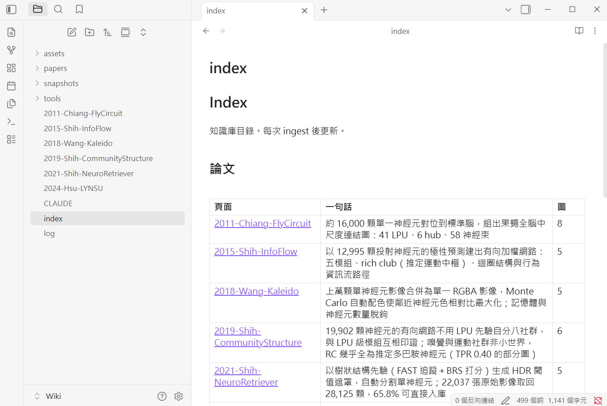
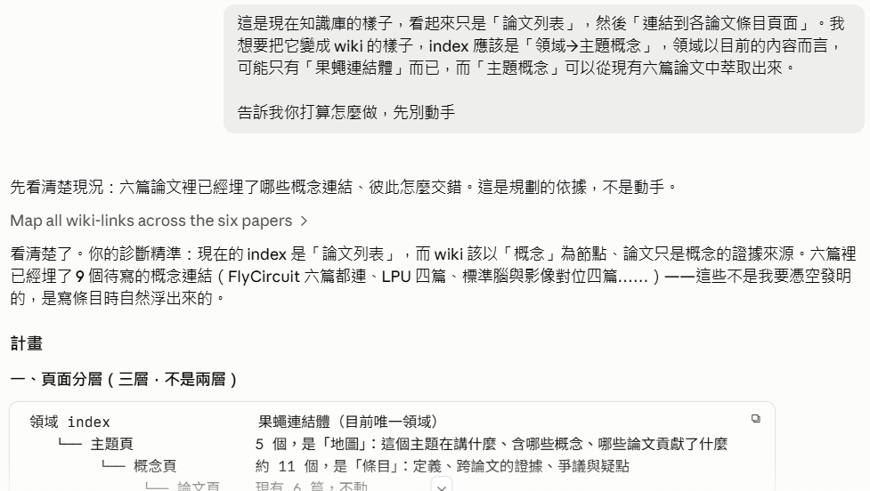
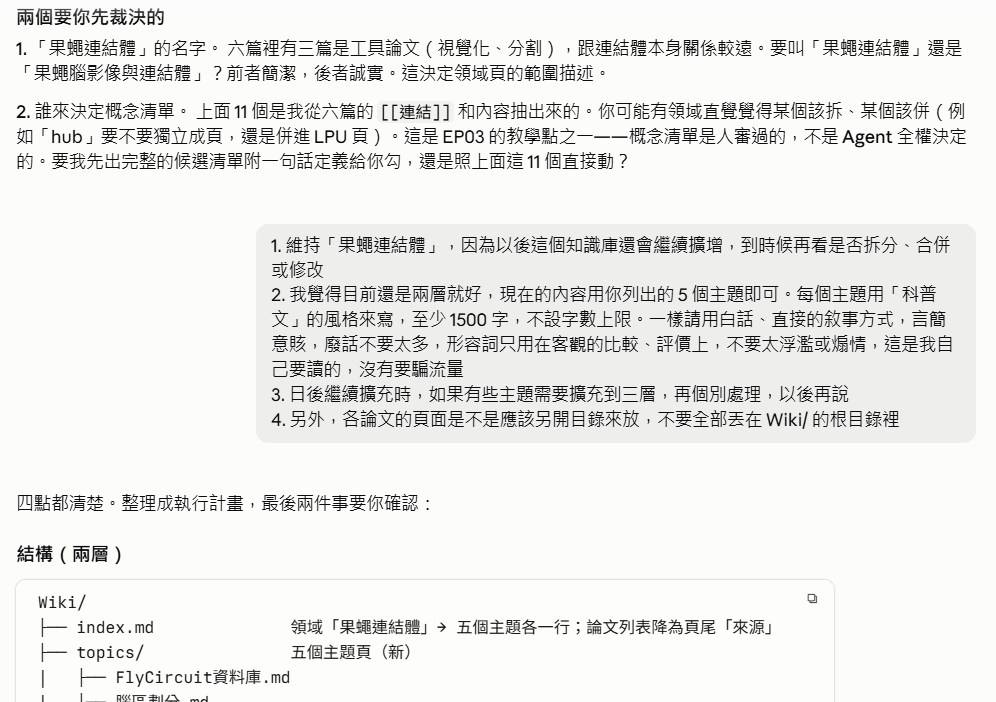
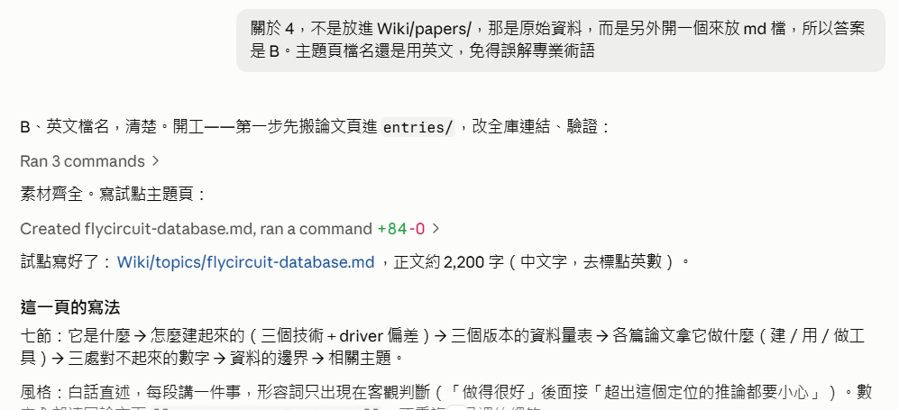
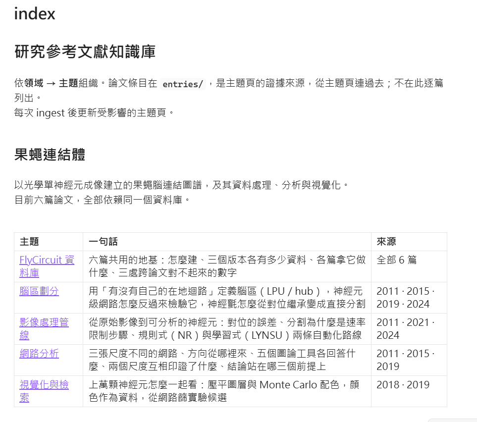
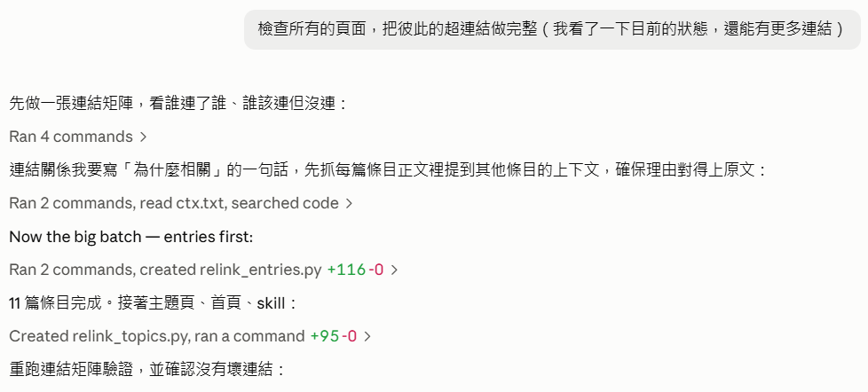

<meta charset="utf-8">
<title>From a Pile of Entries to a Wiki</title>
<style>
  :root {
    --paper:      #F7F8F7;
    --surface:    #FFFFFF;
    --surface-2:  #EFF2F1;
    --ink:        #16171A;
    --ink-soft:   #576063;
    --ink-faint:  #8A9496;
    --rule:       #DCE1DF;
    --rule-soft:  #E9EDEB;
    --human:      #9A5B08;
    --human-bg:   #FDF6EC;
    --human-rule: #E3B678;
    --agent:      #0C625F;
    --agent-bg:   #EDF5F4;
    --agent-rule: #7FBAB6;
    --shadow:     0 1px 2px rgba(20,30,30,.05), 0 8px 24px rgba(20,30,30,.06);

    --serif: "Iowan Old Style", "Palatino Linotype", Palatino, Georgia,
             "Noto Serif TC", "Songti TC", "PMingLiU", serif;
    --sans:  "Segoe UI", system-ui, -apple-system, "Helvetica Neue", Arial,
           "Noto Sans TC", "PingFang TC", "Microsoft JhengHei", sans-serif;
    --mono:  "SF Mono", "Cascadia Mono", "JetBrains Mono", Consolas,
             "Courier New", monospace;

    --col: 40rem;
  }

  @media (prefers-color-scheme: dark) {
    :root:not([data-theme="light"]) {
      --paper:      #101416;
      --surface:    #171D1F;
      --surface-2:  #1E2528;
      --ink:        #E6EBEA;
      --ink-soft:   #9DA9A9;
      --ink-faint:  #788485;
      --rule:       #2A3336;
      --rule-soft:  #222A2D;
      --human:      #E4A75C;
      --human-bg:   #241C11;
      --human-rule: #6E5124;
      --agent:      #57C6BE;
      --agent-bg:   #102422;
      --agent-rule: #2C5D5A;
      --shadow:     0 1px 2px rgba(0,0,0,.3), 0 8px 24px rgba(0,0,0,.35);
    }
  }

  :root[data-theme="dark"] {
    --paper:      #101416;
    --surface:    #171D1F;
    --surface-2:  #1E2528;
    --ink:        #E6EBEA;
    --ink-soft:   #9DA9A9;
    --ink-faint:  #788485;
    --rule:       #2A3336;
    --rule-soft:  #222A2D;
    --human:      #E4A75C;
    --human-bg:   #241C11;
    --human-rule: #6E5124;
    --agent:      #57C6BE;
    --agent-bg:   #102422;
    --agent-rule: #2C5D5A;
    --shadow:     0 1px 2px rgba(0,0,0,.3), 0 8px 24px rgba(0,0,0,.35);
  }

  * { box-sizing: border-box; }

  body {
    margin: 0;
    background: var(--paper);
    color: var(--ink);
    font-family: var(--sans);
    font-size: 17px;
    line-height: 1.68;
    -webkit-font-smoothing: antialiased;
  }

  .wrap {
    max-width: 58rem;
    margin: 0 auto;
    padding: 0 1.5rem 6rem;
  }

  /* ---------- Masthead ---------- */

  .masthead {
    padding: 5.5rem 0 3rem;
    border-bottom: 1px solid var(--rule);
    display: flex;
    flex-direction: column;
    gap: 1.1rem;
  }
  .eyebrow {
    font-family: var(--mono);
    font-size: .72rem;
    letter-spacing: .16em;
    text-transform: uppercase;
    color: var(--ink-faint);
  }
  .masthead h1 {
    font-family: var(--serif);
    font-weight: 600;
    font-size: clamp(2.4rem, 6vw, 3.9rem);
    line-height: 1.08;
    letter-spacing: -.015em;
    margin: 0;
    text-wrap: balance;
  }
  .standfirst {
    font-size: 1.12rem;
    color: var(--ink-soft);
    max-width: var(--col);
    margin: 0;
  }
  .meta-row {
    display: flex;
    flex-wrap: wrap;
    gap: .5rem 1.6rem;
    font-family: var(--mono);
    font-size: .78rem;
    color: var(--ink-faint);
    margin-top: .6rem;
  }

  /* ---------- General text ---------- */

  .lede, .prose { max-width: var(--col); }
  .prose p { margin: 0 0 1.05rem; }
  .prose p:last-child { margin-bottom: 0; }
  .prose h3 {
    font-family: var(--serif);
    font-size: 1.18rem;
    font-weight: 600;
    margin: 2rem 0 .7rem;
    letter-spacing: -.005em;
  }
  .prose h3:first-child { margin-top: 0; }
  .prose ul, .prose ol { margin: 0 0 1.05rem; padding-left: 1.3rem; }
  .prose li { margin-bottom: .4rem; }

  /* Supplementary blocks */
  .digest {
    max-width: var(--col);
    margin: 0 0 1.6rem;
    padding: 1.5rem 1.6rem;
    background: var(--surface);
    border: 1px solid var(--rule);
    border-radius: 4px;
  }
  .digest > .voice-label {
    color: var(--ink-soft);
    margin-bottom: 1.1rem;
    padding-bottom: .7rem;
    border-bottom: 1px solid var(--rule-soft);
  }
  .digest h3 {
    font-family: var(--serif);
    font-size: 1.1rem;
    font-weight: 600;
    margin: 1.7rem 0 .55rem;
  }
  .digest h3:first-of-type { margin-top: 0; }
  .digest p { margin: 0 0 .8rem; }
  .digest ul { margin: 0 0 .8rem; padding-left: 1.25rem; }
  .digest li { margin-bottom: .38rem; }
  .digest > :last-child { margin-bottom: 0; }
  .digest blockquote {
    margin: .9rem 0;
    padding: .1rem 0 .1rem 1rem;
    border-left: 2px solid var(--agent-rule);
    color: var(--ink-soft);
    font-style: normal;
  }

  /* Collapsible variant */
  details.digest { padding: 0; }
  details.digest > summary {
    list-style: none;
    cursor: pointer;
    padding: 1.05rem 1.6rem;
    display: flex;
    align-items: center;
    gap: .8rem;
    font-family: var(--mono);
    font-size: .72rem;
    letter-spacing: .15em;
    text-transform: uppercase;
    font-weight: 600;
    color: var(--ink-soft);
    border-radius: 4px;
  }
  details.digest > summary::-webkit-details-marker { display: none; }
  details.digest > summary::marker { content: ""; }
  details.digest > summary::before {
    content: "+";
    font-family: var(--mono);
    font-size: 1rem;
    line-height: 1;
    width: 1.35rem;
    height: 1.35rem;
    flex: none;
    display: grid;
    place-items: center;
    border: 1px solid var(--rule);
    border-radius: 3px;
    color: var(--agent);
    background: var(--paper);
  }
  details.digest[open] > summary::before { content: "\2212"; }
  details.digest > summary:hover { color: var(--ink); }
  details.digest > summary:hover::before { border-color: var(--agent-rule); }
  details.digest > summary .hint {
    margin-left: auto;
    font-size: .68rem;
    letter-spacing: .1em;
    color: var(--ink-faint);
    font-weight: 500;
  }
  details.digest[open] > summary {
    border-bottom: 1px solid var(--rule-soft);
  }
  details.digest[open] > summary .hint { display: none; }
  .digest-body { padding: 1.4rem 1.6rem 1.5rem; }
  .digest-body > :last-child { margin-bottom: 0; }
  .digest-body h3:first-of-type { margin-top: 0; }
  .digest-body pre.skill-src {
    margin: 0;
    padding: 1rem 1.1rem;
    background: var(--surface-2);
    border: 1px solid var(--rule-soft);
    border-radius: 4px;
    font-family: var(--mono);
    font-size: .8rem;
    line-height: 1.6;
    white-space: pre-wrap;
    word-break: break-word;
    overflow-x: auto;
    color: var(--ink);
  }
  strong { font-weight: 600; }
  code {
    font-family: var(--mono);
    font-size: .86em;
    background: var(--surface-2);
    padding: .12em .38em;
    border-radius: 3px;
    word-break: break-word;
  }
  a { color: var(--agent); text-underline-offset: .18em; }
  a:focus-visible, summary:focus-visible {
    outline: 2px solid var(--agent);
    outline-offset: 3px;
    border-radius: 2px;
  }

  /* ---------- Video ---------- */

  .video {
    margin: 3rem 0 0;
    padding: 0;
  }
  .video-frame {
    position: relative;
    width: 100%;
    aspect-ratio: 16 / 9;
    background: #0d1113;
    border: 1px solid var(--rule);
    border-radius: 6px;
    overflow: hidden;
    box-shadow: var(--shadow);
  }
  a.video-frame { display: block; text-decoration: none; cursor: pointer; }
  .video-frame > img {
    position: absolute;
    inset: 0;
    width: 100%;
    height: 100%;
    display: block;
    object-fit: cover;
    transition: transform .5s ease, filter .3s ease;
  }
  .video-frame .play {
    position: absolute;
    left: 50%; top: 50%;
    transform: translate(-50%, -50%);
    width: 5.2rem; height: 5.2rem;
    border-radius: 50%;
    background: rgba(12, 18, 20, .62);
    border: 2px solid rgba(255,255,255,.9);
    display: grid; place-items: center;
    transition: background .25s ease, transform .25s ease;
  }
  .video-frame .play::before {
    content: "";
    width: 0; height: 0;
    margin-left: .35rem;
    border-left: 1.35rem solid #fff;
    border-top: .85rem solid transparent;
    border-bottom: .85rem solid transparent;
  }
  .video-frame .play-label {
    position: absolute;
    left: 0; right: 0; bottom: 0;
    padding: 2.6rem 1.4rem 1.1rem;
    background: linear-gradient(to top, rgba(8,12,14,.85), rgba(8,12,14,0));
    color: #fff;
    font-size: .95rem;
    letter-spacing: .02em;
  }
  .video-frame > iframe {
    position: absolute;
    inset: 0;
    width: 100%;
    height: 100%;
    border: 0;
    z-index: 2;
  }
  .video-frame.playing > img,
  .video-frame.playing .play,
  .video-frame.playing .play-label { display: none; }
  .video-note {
    margin-top: .5rem;
    font-size: .82rem;
    color: var(--ink-faint);
  }
  a.video-frame:hover > img { transform: scale(1.02); filter: brightness(.92); }
  a.video-frame:hover .play { background: rgba(12,18,20,.85); transform: translate(-50%,-50%) scale(1.06); }
  a.video-frame:focus-visible { outline: 3px solid var(--agent); outline-offset: 3px; }
  .video figcaption {
    margin-top: .85rem;
    display: flex;
    flex-wrap: wrap;
    gap: .4rem 1.2rem;
    align-items: baseline;
    font-size: .88rem;
    color: var(--ink-faint);
  }
  .video figcaption b {
    font-family: var(--mono);
    font-size: .72rem;
    letter-spacing: .14em;
    text-transform: uppercase;
    color: var(--ink-soft);
    font-weight: 600;
  }

  /* ---------- Legend ---------- */

  .legend {
    margin: 3rem 0 0;
    padding: 1.4rem 1.5rem;
    background: var(--surface);
    border: 1px solid var(--rule);
    border-radius: 4px;
    display: grid;
    gap: 1rem;
    grid-template-columns: repeat(auto-fit, minmax(13rem, 1fr));
  }
  .legend h2 {
    grid-column: 1 / -1;
    margin: 0;
    font-family: var(--mono);
    font-size: .72rem;
    letter-spacing: .16em;
    text-transform: uppercase;
    color: var(--ink-faint);
    font-weight: 500;
  }
  .legend-item {
    display: flex;
    gap: .8rem;
    align-items: flex-start;
    font-size: .92rem;
    line-height: 1.6;
    color: var(--ink-soft);
  }
  .swatch {
    width: 3px;
    align-self: stretch;
    min-height: 2.6rem;
    border-radius: 2px;
    flex: none;
  }
  .swatch.h { background: var(--human); }
  .swatch.a { background: var(--agent); }
  .swatch.s { background: var(--ink-faint); }
  .legend-item b {
    display: block;
    color: var(--ink);
    font-weight: 600;
  }

  /* ---------- Table of contents ---------- */

  .toc {
    margin-top: 2.5rem;
    padding-top: 2rem;
    border-top: 1px solid var(--rule-soft);
  }
  .toc h2 {
    font-family: var(--mono);
    font-size: .72rem;
    letter-spacing: .16em;
    text-transform: uppercase;
    color: var(--ink-faint);
    font-weight: 500;
    margin: 0 0 1rem;
  }
  .toc ol {
    list-style: none;
    margin: 0;
    padding: 0;
    columns: 2;
    column-gap: 2.5rem;
  }
  .toc li {
    break-inside: avoid;
    border-bottom: 1px solid var(--rule-soft);
  }
  .toc a {
    display: flex;
    gap: .9rem;
    padding: .5rem 0;
    text-decoration: none;
    color: var(--ink);
    font-size: .95rem;
  }
  .toc a:hover { color: var(--agent); }
  .toc .n {
    font-family: var(--mono);
    font-size: .8rem;
    color: var(--ink-faint);
    flex: none;
    padding-top: .12em;
  }

  /* ---------- Steps ---------- */

  .step {
    padding-top: 4.5rem;
    scroll-margin-top: 1rem;
  }
  .step-head {
    display: flex;
    align-items: baseline;
    gap: 1rem;
    margin-bottom: 1.6rem;
    padding-bottom: .9rem;
    border-bottom: 2px solid var(--ink);
  }
  .step-num {
    font-family: var(--mono);
    font-size: .95rem;
    font-weight: 600;
    color: var(--ink-faint);
    flex: none;
    font-variant-numeric: tabular-nums;
  }
  .step-head h2 {
    font-family: var(--serif);
    font-weight: 600;
    font-size: clamp(1.45rem, 3vw, 1.95rem);
    line-height: 1.22;
    margin: 0;
    letter-spacing: -.01em;
    text-wrap: balance;
  }

  /* The three voices */

  .voice {
    margin: 0 0 1.5rem;
    border-radius: 4px;
    padding: 1.15rem 1.35rem;
    max-width: var(--col);
  }
  .voice-label {
    display: block;
    font-family: var(--mono);
    font-size: .68rem;
    letter-spacing: .15em;
    text-transform: uppercase;
    margin-bottom: .7rem;
    font-weight: 600;
  }
  .voice p, .voice ol, .voice ul { margin: 0 0 .8rem; }
  .voice > :last-child { margin-bottom: 0; }

  .v-human {
    background: var(--human-bg);
    border-left: 3px solid var(--human);
  }
  .v-human .voice-label { color: var(--human); }
  .v-human .cmd {
    font-family: var(--mono);
    font-size: .93rem;
    line-height: 1.72;
    white-space: pre-wrap;
    color: var(--ink);
    margin: 0;
  }
  .v-human code { background: rgba(154,91,8,.1); }

  .v-agent {
    background: var(--agent-bg);
    border-left: 3px solid var(--agent);
  }
  .v-agent .voice-label { color: var(--agent); }
  .v-agent code { background: rgba(12,98,95,.1); }
  .v-agent ol, .v-agent ul {
    padding-left: 1.3rem;
  }
  .v-agent li { margin-bottom: .45rem; }
  .v-agent li:last-child { margin-bottom: 0; }

  /* Tools box */

  .tools {
    max-width: var(--col);
    margin: 0 0 1.5rem;
    border: 1px solid var(--rule);
    border-radius: 4px;
    background: var(--surface);
    overflow: hidden;
  }
  .tools h3 {
    margin: 0;
    padding: .7rem 1.2rem;
    font-family: var(--mono);
    font-size: .68rem;
    letter-spacing: .15em;
    text-transform: uppercase;
    color: var(--ink-soft);
    font-weight: 600;
    background: var(--surface-2);
    border-bottom: 1px solid var(--rule);
  }
  .tools dl {
    margin: 0;
    padding: 1rem 1.2rem;
    display: grid;
    grid-template-columns: auto 1fr;
    gap: .55rem 1rem;
    align-items: baseline;
    font-size: .93rem;
  }
  .tools dt {
    font-family: var(--mono);
    font-size: .85rem;
    color: var(--ink);
    font-weight: 600;
    white-space: nowrap;
  }
  .tools dd { margin: 0; color: var(--ink-soft); }

  /* Origin tags — EP02 only */

  .tag {
    display: inline-block;
    font-family: var(--mono);
    font-size: .64rem;
    letter-spacing: .1em;
    padding: .1em .5em;
    border-radius: 2px;
    vertical-align: .12em;
    margin-right: .45rem;
    white-space: nowrap;
  }
  .tag.given { background: var(--human-bg); color: var(--human); border: 1px solid var(--human-rule); }
  .tag.hit   { background: var(--agent-bg); color: var(--agent); border: 1px solid var(--agent-rule); }
  .tag.conv  { background: var(--surface-2); color: var(--ink-faint); border: 1px solid var(--rule); }

  .origin {
    max-width: var(--col);
    margin: 0 0 1.5rem;
    padding: 1.15rem 1.35rem;
    background: var(--surface);
    border: 1px solid var(--rule);
    border-radius: 4px;
  }
  .origin .voice-label { color: var(--ink-soft); }
  .origin ul { margin: 0; padding-left: 0; list-style: none; }
  .origin li {
    margin-bottom: .6rem;
    font-size: .95rem;
    line-height: 1.65;
    color: var(--ink-soft);
  }
  .origin li:last-child { margin-bottom: 0; }
  .origin li b { color: var(--ink); font-weight: 600; }

  /* Screenshots */

  figure.shot {
    margin: 2rem 0 1.8rem;
    max-width: 52rem;
  }
  figure.shot .shot-label {
    display: flex;
    align-items: center;
    gap: .55rem;
    font-family: var(--mono);
    font-size: .68rem;
    letter-spacing: .15em;
    text-transform: uppercase;
    font-weight: 600;
    color: var(--ink-soft);
    margin-bottom: .6rem;
  }
  figure.shot .shot-label::before {
    content: "";
    width: 3px;
    height: 1.05em;
    border-radius: 2px;
    background: var(--ink-faint);
    flex: none;
  }
  /* Screenshots scale uniformly (captured at one resolution, so text is the same size); heights are not forced to match */
  figure.shot img {
    display: block;
    width: auto;
    max-width: 100%;
    height: auto;
    border: 1px solid var(--rule);
    border-radius: 4px;
    background: var(--surface);
    box-shadow: var(--shadow);
  }
  figure.shot figcaption {
    margin-top: .75rem;
    font-size: .85rem;
    line-height: 1.6;
    color: var(--ink-faint);
    max-width: var(--col);
  }
  figure.shot figcaption b {
    font-family: var(--mono);
    font-size: .78rem;
    letter-spacing: .1em;
    text-transform: uppercase;
    color: var(--ink-soft);
    margin-right: .5rem;
    font-weight: 600;
  }

  /* Takeaways */

  .point {
    max-width: var(--col);
    margin: 0;
    padding: 1.15rem 1.35rem;
    background: var(--surface);
    border: 1px solid var(--rule);
    border-left: 3px solid var(--ink);
    border-radius: 4px;
  }
  .point .voice-label { color: var(--ink-soft); }
  .point p { margin: 0 0 .7rem; }
  .point p:last-child { margin-bottom: 0; }
  .point.hero {
    border-left-color: var(--human);
    background: var(--human-bg);
  }
  .point.hero .voice-label { color: var(--human); }

  /* ---------- Closing ---------- */

  .closing {
    margin-top: 5.5rem;
    padding-top: 3rem;
    border-top: 2px solid var(--ink);
  }
  .closing h2 {
    font-family: var(--serif);
    font-size: clamp(1.6rem, 3.5vw, 2.2rem);
    font-weight: 600;
    margin: 0 0 1.6rem;
    letter-spacing: -.01em;
  }
  .closing h3 {
    font-size: 1.02rem;
    font-weight: 600;
    margin: 2.2rem 0 .8rem;
  }
  .obs {
    display: grid;
    gap: 1rem;
    grid-template-columns: repeat(auto-fit, minmax(15rem, 1fr));
    margin: 1.5rem 0 0;
    padding: 0;
    list-style: none;
  }
  .obs li {
    background: var(--surface);
    border: 1px solid var(--rule);
    border-radius: 4px;
    padding: 1.1rem 1.25rem;
    font-size: .95rem;
    line-height: 1.68;
    color: var(--ink-soft);
  }
  .obs b {
    display: block;
    color: var(--ink);
    font-weight: 600;
    margin-bottom: .3rem;
  }

  .table-wrap { overflow-x: auto; margin: 1.2rem 0 0; }
  table {
    border-collapse: collapse;
    width: 100%;
    min-width: 34rem;
    font-size: .93rem;
  }
  th, td {
    text-align: left;
    padding: .6rem .9rem;
    border-bottom: 1px solid var(--rule-soft);
    vertical-align: top;
  }
  th {
    font-family: var(--mono);
    font-size: .7rem;
    letter-spacing: .12em;
    text-transform: uppercase;
    color: var(--ink-faint);
    font-weight: 600;
    border-bottom: 1px solid var(--rule);
  }
  td:first-child { white-space: nowrap; font-family: var(--mono); font-size: .86rem; }
  td:nth-child(2) { color: var(--ink-soft); }

  .cta {
    margin-top: 3rem;
    padding: 1.7rem 1.8rem;
    background: var(--agent-bg);
    border: 1px solid var(--agent-rule);
    border-radius: 6px;
    display: flex;
    flex-wrap: wrap;
    gap: 1.2rem;
    align-items: center;
    justify-content: space-between;
  }
  .cta-text { max-width: 26rem; }
  .cta h3 {
    margin: 0 0 .35rem;
    font-family: var(--serif);
    font-size: 1.3rem;
    font-weight: 600;
    color: var(--ink);
  }
  .cta p { margin: 0; font-size: .95rem; color: var(--ink-soft); line-height: 1.65; }
  a.cta-btn {
    flex: none;
    display: inline-block;
    background: var(--agent);
    color: var(--paper);
    font-weight: 600;
    font-size: .97rem;
    padding: .75rem 1.6rem;
    border-radius: 5px;
    text-decoration: none;
    transition: opacity .15s ease;
  }
  a.cta-btn:hover { opacity: .87; }
  a.cta-btn:focus-visible { outline: 2px solid var(--ink); outline-offset: 3px; }

  .next {
    margin-top: 3rem;
    padding: 1.4rem 1.5rem;
    border: 1px dashed var(--rule);
    border-radius: 4px;
    max-width: var(--col);
    color: var(--ink-soft);
    font-size: .95rem;
  }
  .next b { color: var(--ink); }

  @media (max-width: 40rem) {
    body { font-size: 16px; }
    .toc ol { columns: 1; }
    .masthead { padding-top: 3.5rem; }
    .voice, .tools, .point, .origin { padding-left: 1.05rem; padding-right: 1.05rem; }
  }

  @media (prefers-reduced-motion: reduce) {
    * { animation: none !important; transition: none !important; }
  }
  .voice.full { border-left-style: dashed; }

  /* ===== English-edition additions (tools/english-edition.css) ===== */

/* English-edition styles for a tutorial page (extracted from ep01_eng, shared by every epNN_eng)

   Append the whole file to the end of that episode's Chinese <style> block, and change two things:
     --sans / --serif  put the Latin faces first
     body line-height  1.78 -> 1.68 (English does not need the looser leading)

   .edition          the "About this edition" note in the header
   .v-human .orig    the prompt's original wording, under its English translation
   details.transcript / .tr-*   the English transcript panel under a screenshot
   .table-note       the small note under a table */

/* ---------- Edition note ---------- */

  .edition {
    margin: 2.2rem 0 0;
    padding: 1.1rem 1.4rem;
    border: 1px dashed var(--rule);
    border-radius: 4px;
    max-width: var(--col);
    color: var(--ink-soft);
    font-size: .93rem;
    line-height: 1.6;
  }
  .edition b { color: var(--ink); }
  .edition p { margin: 0 0 .5rem; }
  .edition p:last-child { margin-bottom: 0; }

/* the original wording, verbatim */
  .v-human .orig {
    margin: .8rem 0 0;
    padding-top: .65rem;
    border-top: 1px dashed var(--human-rule);
    font-family: var(--mono);
    font-size: .8rem;
    line-height: 1.6;
    color: var(--ink-faint);
    white-space: pre-wrap;
  }
  .v-human .orig .orig-label {
    display: block;
    font-size: .62rem;
    letter-spacing: .14em;
    text-transform: uppercase;
    color: var(--human);
    opacity: .85;
    margin-bottom: .2rem;
    font-weight: 600;
  }

/* English transcript of a screenshot */

  details.transcript {
    max-width: 52rem;
    margin: .9rem 0 0;
    border: 1px solid var(--rule);
    border-radius: 4px;
    background: var(--surface);
    font-size: .9rem;
    line-height: 1.55;
  }
  details.transcript > summary {
    list-style: none;
    cursor: pointer;
    padding: .7rem 1.1rem;
    display: flex;
    align-items: center;
    gap: .7rem;
    font-family: var(--mono);
    font-size: .68rem;
    letter-spacing: .15em;
    text-transform: uppercase;
    font-weight: 600;
    color: var(--ink-soft);
  }
  details.transcript > summary::-webkit-details-marker { display: none; }
  details.transcript > summary::marker { content: ""; }
  details.transcript > summary::before {
    content: "\2212";
    font-family: var(--mono);
    font-size: .95rem;
    line-height: 1;
    width: 1.2rem; height: 1.2rem;
    flex: none;
    display: grid; place-items: center;
    border: 1px solid var(--rule);
    border-radius: 3px;
    color: var(--agent);
    background: var(--paper);
  }
  details.transcript:not([open]) > summary::before { content: "+"; }
  details.transcript > summary .hint {
    margin-left: auto;
    font-size: .64rem;
    letter-spacing: .1em;
    color: var(--ink-faint);
    font-weight: 500;
    text-transform: none;
  }
  details.transcript[open] > summary { border-bottom: 1px solid var(--rule-soft); }
  .tr-body { padding: 1rem 1.2rem 1.1rem; }
  .tr-body > :last-child { margin-bottom: 0; }
  .tr-body p { margin: 0 0 .55rem; }
  .tr-body .tr-user {
    /* the user's prompt: a bubble on the right, sized to its text, like the real UI */
    display: block;
    width: fit-content;
    max-width: 78%;
    margin: 0 0 .9rem auto;
    background: var(--surface-2);
    border-radius: 10px;
    padding: .55rem .9rem;
    white-space: pre-wrap;
    color: var(--ink);
  }
  .tr-tool {
    font-family: var(--mono);
    font-size: .8rem;
    color: var(--ink-faint);
    margin: .3rem 0 .6rem;
  }
  .tr-tool.fail { color: #B3341F; }
  .tr-tool .diff-add { color: #2E7D32; }
  .tr-tool .diff-del { color: #B3341F; }
  .tr-h { font-weight: 600; margin: .85rem 0 .3rem; }
  .tr-quote {
    margin: .3rem 0 .7rem;
    padding: .1rem 0 .1rem .9rem;
    border-left: 2px solid var(--rule);
    color: var(--ink-soft);
  }
  .tr-pane { border-top: 1px dashed var(--rule); padding-top: .8rem; margin-top: 1rem; }
  .tr-pane:first-child { border-top: 0; padding-top: 0; margin-top: 0; }
  .tr-pane-label {
    display: block;
    font-family: var(--mono);
    font-size: .64rem;
    letter-spacing: .14em;
    text-transform: uppercase;
    color: var(--agent);
    font-weight: 600;
    margin-bottom: .45rem;
  }
  .tr-note { color: var(--ink-faint); font-size: .82rem; }
  .tr-cut { color: var(--ink-faint); }
  .tr-body table { min-width: 0; font-size: .85rem; margin: .3rem 0 .8rem; }
  .tr-body th, .tr-body td { padding: .38rem .6rem; }
  .tr-body td:first-child { font-family: var(--sans); font-size: .85rem; white-space: normal; }
  .tr-body dl.kv {
    margin: 0 0 .8rem;
    display: grid;
    grid-template-columns: auto 1fr;
    gap: .2rem .9rem;
    font-size: .85rem;
  }
  .tr-body dl.kv dt { font-family: var(--mono); color: var(--ink-faint); font-size: .8rem; }
  .tr-body dl.kv dd { margin: 0; }
  @media (prefers-color-scheme: dark) {
    :root:not([data-theme="light"]) .tr-tool.fail, :root:not([data-theme="light"]) .tr-tool .diff-del { color: #F0907A; }
    :root:not([data-theme="light"]) .tr-tool .diff-add { color: #7BC47F; }
  }
  :root[data-theme="dark"] .tr-tool.fail, :root[data-theme="dark"] .tr-tool .diff-del { color: #F0907A; }
  :root[data-theme="dark"] .tr-tool .diff-add { color: #7BC47F; }

  .table-note {
    font-size: .82rem;
    color: var(--ink-faint);
    margin: .5rem 0 0;
  }

</style>

<div class="wrap">

  <header class="masthead">
    <div class="eyebrow">BSC Tutorial · EP03 · English edition</div>
    <h1>From a Pile of Entries to a Wiki</h1>
    <p class="standfirst">
      The last episode produced a rulebook and used it to write six paper entries. But six files
      sitting in a folder is not a knowledge base — that is a pile. This episode turns it into a real
      wiki: domain, topic and entry each in their place, new papers ingested as soon as you drop them
      in, and every page able to reach the others.
    </p>
    <div class="meta-row">
      <span>12 steps</span>
      <span>Claude Code · Fable 5</span>
      <span>Windows 11</span>
      <span>Follows on from EP02</span>
    </div>
  </header>

  <aside class="edition">
    <p><b>About this edition.</b> This is the English version of EP03. The session it records was
    conducted in Traditional Chinese, so the Claude Code screenshots are in Chinese. They are shown
    exactly as captured — nothing has been retouched — and <b>under every screenshot is an English
    transcript</b> of what it says, laid out the way the screen was. Five of them are Obsidian views
    of the wiki itself; the wiki they show exists in English too, as
    <code>Wiki_Eng/</code> — the same eleven entries, nine topic pages, index, changelog and registry,
    translated — so you can read the real thing rather than a screenshot. Each prompt is given in
    English with the original wording underneath.</p>
  </aside>

  <figure class="video">
    <a class="video-frame" href="https://youtu.be/IUhhnPO7_aQ" data-remote="https://youtu.be/IUhhnPO7_aQ"
       target="_blank" rel="noopener">
      
      <span class="play" aria-hidden="true"></span>
      <span class="play-label">Play the tutorial video　·　14 min 57 s　·　watch on YouTube ↗</span>
    </a>
    <figcaption>
      <b>Tutorial video</b>
      <span>Watch the video first for the big picture, then read the twelve steps below for the details.</span>
    </figcaption>
  </figure>

  <script>
  // Video playback: embed inline when served from a web server, otherwise open in a new tab.
  // YouTube refuses embeds from file:// (error 153) and claude.ai's CSP blocks external
  // iframes, so both of those cases fall back to a plain link.
  // The YouTube ID is filled in after upload; until then the card links to the local mp4.
  (function () {
    var ID = 'IUhhnPO7_aQ';       var box = document.querySelector('a.video-frame');
    if (!box || !ID) return;

    var servedOverHttp = /^https?:$/.test(location.protocol);
    var blockedHost = /(^|\.)claude\.ai$/i.test(location.hostname);
    if (!servedOverHttp || blockedHost) return;   // keep plain-link behavior

    box.addEventListener('click', function (e) {
      if (box.classList.contains('playing')) return;
      e.preventDefault();

      var f = document.createElement('iframe');
      f.src = 'https://www.youtube.com/embed/' + ID + '?autoplay=1&rel=0';
      f.title = 'From a Pile of Entries to a Wiki';
      f.allow = 'accelerometer; autoplay; clipboard-write; encrypted-media; ' +
                'gyroscope; picture-in-picture; web-share';
      f.referrerPolicy = 'strict-origin-when-cross-origin';
      f.allowFullscreen = true;

      var ok = false;
      f.addEventListener('load', function () { ok = true; });
      box.appendChild(f);
      box.classList.add('playing');

      // Safety net: if the embed is blocked (unknown CSP), restore the poster and say so
      setTimeout(function () {
        if (ok) return;
        f.remove();
        box.classList.remove('playing');
        var note = document.createElement('p');
        note.className = 'video-note';
        note.textContent = 'Inline playback is not allowed here — click the poster to watch on YouTube.';
        box.parentNode.appendChild(note);
      }, 3500);
    });
  })();
  </script>

  <section class="legend">
    <h2>How to read this page</h2>
    <div class="legend-item">
      <span class="swatch h"></span>
      <span><b>Your prompt</b>Reproduced verbatim — typos included — in the original Chinese,
      with an English translation above it.</span>
    </div>
    <div class="legend-item">
      <span class="swatch a"></span>
      <span><b>What the Agent did</b>Not just what it answered, but what it measured first,
      which options it offered, and which of them you overruled.</span>
    </div>
    <div class="legend-item">
      <span class="swatch s"></span>
      <span><b>What the screen showed</b>Real screenshots of the original (Chinese) session, each with
      an English transcript underneath. A screenshot usually catches only the first half of a reply; the teal block
      after it, “The full reply, in brief”, fills in what the screenshot missed, and only then comes
      the takeaway.</span>
    </div>
  </section>

  <nav class="toc">
    <h2>The twelve steps</h2>
    <ol>
      <li><a href="#s01"><span class="n">01</span><span>Don't Act Yet: See Where Things Stand</span></a></li>
      <li><a href="#s02"><span class="n">02</span><span>Two Things for You to Decide</span></a></li>
      <li><a href="#s03"><span class="n">03</span><span>Move the Entries, Pilot One Page</span></a></li>
      <li><a href="#s04"><span class="n">04</span><span>Domain → Topic: The New Front Page</span></a></li>
      <li><a href="#s05"><span class="n">05</span><span>The Inbox and the Registry</span></a></li>
      <li><a href="#s06"><span class="n">06</span><span>Stress Test: Five New Papers</span></a></li>
      <li><a href="#s07"><span class="n">07</span><span>Write the Rule the Moment You Hit the Wall</span></a></li>
      <li><a href="#s08"><span class="n">08</span><span>Three Domains, Nine Topics</span></a></li>
      <li><a href="#s09"><span class="n">09</span><span>The Front Page Is Too Crowded: Table into List</span></a></li>
      <li><a href="#s10"><span class="n">10</span><span>The Changelog</span></a></li>
      <li><a href="#s11"><span class="n">11</span><span>Finish the Links</span></a></li>
      <li><a href="#s12"><span class="n">12</span><span>The Skill's Boundary</span></a></li>
    </ol>
  </nav>

  <!-- ============ 01 ============ -->
  <section class="step" id="s01">
    <div class="step-head">
      <span class="step-num">01</span>
      <h2>Don't Act Yet: See Where Things Stand</h2>
    </div>

    <div class="voice v-human">
      <span class="voice-label">Your prompt</span>
      <p class="cmd">This is what the knowledge base looks like at the moment. It reads as nothing more than a “list of papers” that then “links to each paper's entry page”. I want to turn it into the shape of a wiki: index should be “domain → topic concept”. Given the current content the domain is probably just “Drosophila connectome”, and the “topic concepts” can be extracted from the six papers we already have.<br><br>Tell me how you plan to do it. Don't act yet</p>
      <p class="orig" lang="zh-Hant"><span class="orig-label">Original (zh-TW)</span>這是現在知識庫的樣子，看起來只是「論文列表」，然後「連結到各論文條目頁面」。我想要把它變成 wiki 的樣子，index 應該是「領域→主題概念」，領域以目前的內容而言，可能只有「果蠅連結體」而已，而「主題概念」可以從現有六篇論文中萃取出來。<br><br>告訴我你打算怎麼做，先別動手</p>
    </div>

    <div class="voice v-agent">
      <span class="voice-label">What the Agent did</span>
      <ul>
        <li>It did not propose anything straight away. Its first move was to <strong>sweep every
        <code>[[link]]</code> already buried in the six entries</strong>, to see which concepts several
        papers point at and how they interlock — it called this “the basis for planning, not acting”.</li>
        <li>The result of the sweep: the six entries already contain 9 concept links waiting to be
        written (FlyCircuit in all six, LPU in four, standard brain and image registration in four…).
        <strong>The topics were not invented; they surfaced on their own while the entries were being
        written.</strong></li>
        <li>Then the plan: <strong>three layers</strong> — a domain index → topic pages (5 of them, the
        “map”) → concept pages (about 11, the “entries”) → paper pages untouched.</li>
      </ul>
    </div>

    <figure class="shot">
      <span class="shot-label">What the screen showed · the starting point</span>
      
      <figcaption><b>Note</b>This is what a pile looks like: the index is a single table of papers, and the
      six entries sit flat in the root of the wiki. The entries themselves are dense, but there is nothing
      between one page and the next.</figcaption>
    
      <details class="transcript" open>
        <summary>English transcript · what the screenshot says<span class="hint">click to collapse</span></summary>
        <div class="tr-body">
          <p class="tr-note">Obsidian window. Tab title: <code>index</code>. Vault name at the foot of the sidebar: <code>Wiki</code>.</p>
          <div class="tr-pane"><span class="tr-pane-label">File explorer</span>
            <ul>
              <li><code>assets</code></li>
              <li><code>papers</code></li>
              <li><code>snapshots</code></li>
              <li><code>tools</code></li>
              <li><code>2011-Chiang-FlyCircuit</code></li>
              <li><code>2015-Shih-InfoFlow</code></li>
              <li><code>2018-Wang-Kaleido</code></li>
              <li><code>2019-Shih-CommunityStructure</code></li>
              <li><code>2021-Shih-NeuroRetriever</code></li>
              <li><code>2024-Hsu-LYNSU</code></li>
              <li><code>CLAUDE</code></li>
              <li><code>index</code> (highlighted / currently open)</li>
              <li><code>log</code></li>
            </ul>
          </div>
          <div class="tr-pane"><span class="tr-pane-label">Note</span>
            <p><b>index</b></p>
            <p><b>Index</b></p>
            <p>Knowledge-base index. Updated after every ingest.</p>
            <p><b>Papers</b></p>
            <table>
              <thead><tr><th>Page</th><th>In one sentence</th><th>Figures</th></tr></thead>
              <tbody>
                <tr>
                  <td><code>2011-Chiang-FlyCircuit</code></td>
                  <td>About 16,000 single neurons registered onto a standard brain, assembled into a mesoscale connectivity map of the whole fly brain: 41 LPUs, 6 hubs, 58 tracts</td>
                  <td>8</td>
                </tr>
                <tr>
                  <td><code>2015-Shih-InfoFlow</code></td>
                  <td>A directed, weighted network built from polarity prediction on 12,995 projection neurons: five modules, a rich club (putative motor center), loop structure, and information-flow paths for behavior</td>
                  <td>5</td>
                </tr>
                <tr>
                  <td><code>2018-Wang-Kaleido</code></td>
                  <td>Tens of thousands of single-neuron images merged into one RGBA image; Monte Carlo automatic color assignment maximizes the color contrast between neighboring neurons; memory decoupled from neuron count</td>
                  <td>5</td>
                </tr>
                <tr>
                  <td><code>2019-Shih-CommunityStructure</code></td>
                  <td>The directed network of 19,902 neurons splits itself into eight communities with no LPU prior, cross-confirming the LPU-level modules; the olfactory and motor communities are not small-world, and the RC is almost entirely putative dopaminergic neurons (the TPR 0.40 subgraph)</td>
                  <td>6</td>
                </tr>
                <tr>
                  <td><code>2021-Shih-NeuroRetriever</code></td>
                  <td>A tree-structure prior (FAST tracing + BRS scoring) generates an HDR threshold mask that segments single neurons automatically; 28,125 neurons recovered from 22,037 raw images, 65.8% of them able to go straight into the database</td>
                  <td>5</td>
                </tr>
              </tbody>
            </table>
            <p><span class="tr-cut">… (cut off — a further table row begins below the visible area)</span></p>
          </div>
          <p class="tr-note">Status bar, bottom right: 0 backlinks · 499 words · 1,141 characters.</p>
        </div>
      </details>
    </figure>

    <figure class="shot">
      <span class="shot-label">What the screen showed · the Agent's plan</span>
      
      <figcaption><b>Note</b>Look at the line “Map all wiki-links across the six papers” — measure first,
      talk after. The plan below it has <strong>three layers</strong>; the next step cuts it to two.</figcaption>
    
      <details class="transcript" open>
        <summary>English transcript · what the screenshot says<span class="hint">click to collapse</span></summary>
        <div class="tr-body">
          <p class="tr-user">This is what the knowledge base looks like now — it just looks like a "list of papers", which then "links out to each paper's entry page". I want to turn it into something wiki-shaped. <code>index</code> should be "domain &rarr; topic concept"; given the current content, the domain is probably only "Drosophila connectome", and the "topic concepts" can be extracted out of the six papers we already have.<br><br>Tell me how you plan to do it — don't act yet</p>
          <p>First, get a clear picture of where things stand: which concept links already exist across the six papers, and how they interleave. That is the basis for the plan, not the doing.</p>
          <p class="tr-tool">Map all wiki-links across the six papers ›</p>
          <p>Now it is clear. Your diagnosis is precise: the current <code>index</code> is a "list of papers", whereas a wiki should take <b>concepts</b> as its nodes, with papers being only the evidence sources for those concepts. The six papers already contain 9 concept links that are still to be written (FlyCircuit is linked by all six, LPU by four, standard brain and image registration by four…) — these are not things I have to invent out of thin air; they surfaced by themselves while the entries were being written.</p>
          <p class="tr-h">Plan</p>
          <p class="tr-h">1. Page layers (three layers, not two)</p>
          <p class="tr-quote">domain <code>index</code>&nbsp; — &nbsp;Drosophila connectome (the only domain so far)</p>
          <p class="tr-quote">└── topic pages&nbsp; — &nbsp;5 of them; these are the "map": what this topic is about, which concepts it contains, what each paper contributed</p>
          <p class="tr-quote">&nbsp;&nbsp;&nbsp;&nbsp;└── concept pages&nbsp; — &nbsp;about 11; these are the "entries": definitions, cross-paper evidence, disputes and open questions</p>
          <p class="tr-quote">&nbsp;&nbsp;&nbsp;&nbsp;&nbsp;&nbsp;&nbsp;&nbsp;└── paper pages&nbsp; — &nbsp;the existing 6, left alone <span class="tr-cut">… (cut off)</span></p>
        </div>
      </details>
    </figure>

    <div class="voice v-agent full">
      <span class="voice-label">The full reply, in brief · after the screenshot</span>
      <ul>
        <li>The rest of the plan: what each of the <strong>five topics</strong> would cover — FlyCircuit
        database (the shared foundation of all six), brain-region parcellation (defining and testing LPUs
        and hubs), image-processing pipeline (registration, segmentation, tracing), network analysis
        (three networks at three different scales), visualization and retrieval. Not one of those five
        names was ever changed.</li>
        <li>About 11 candidate concept pages (FlyCircuit, LPU, standard brain and image registration,
        rich club, small world, modularity analysis, SPIN polarity prediction, mesoscale connectome,
        hemibrain…), each with a one-line definition; paper pages untouched.</li>
        <li>How the index would change: domain → one line per topic; the paper list demoted to the foot
        of the page.</li>
        <li>It stopped at the end to list “two things for you to decide first” — see the next step.</li>
      </ul>
    </div>

    <aside class="point">
      <span class="voice-label">Takeaway</span>
      <p><strong>“Don't act yet” buys you a look at the plan before the Agent produces a mountain of
      output.</strong> Everything structural in this episode is decided at that one moment; the rest is
      execution.</p>
      <p>The other thing: the Agent did not pull “what topics exist in the Drosophila connectome” out of
      its head. It went and counted the links already in the entries. <strong>Burying one more
      <code>[[concept]]</code> link while writing an entry pays off</strong> — in this step those links
      became the evidence for the structure.</p>
    </aside>
  </section>

  <!-- ============ 02 ============ -->
  <section class="step" id="s02">
    <div class="step-head">
      <span class="step-num">02</span>
      <h2>Two Things for You to Decide</h2>
    </div>

    <div class="voice v-agent">
      <span class="voice-label">What the Agent did</span>
      <p>At the end of the plan it stopped on its own and listed <strong>two questions it should not be
      the one to answer</strong>:</p>
      <ol>
        <li>Whether “Drosophila connectome” is the right name for the domain — three of the six papers are
        method papers, so “Drosophila connectome” is tidy while “Drosophila brain imaging and connectome”
        is honest.</li>
        <li>Who decides the concept list — those 11 came from the links it had extracted, but a question
        like “does hub get its own page or fold into LPU” needs domain intuition. In its own words:
        <strong>“The concept list is reviewed by a human, not decided by the Agent alone.”</strong></li>
      </ol>
    </div>

    <div class="voice v-human">
      <span class="voice-label">Your prompt</span>
      <p class="cmd">1. Keep “Drosophila connectome”, because this knowledge base is going to keep growing; we can look at splitting, merging or renaming it later<br>
      2. I think two layers is enough for now, and the current content can use the 5 topics you listed. Write each topic in the style of a “general-audience article”, at least 1500 characters, no upper limit. Same as before: plain, direct narrative, concise, not too much padding; adjectives only for objective comparison and assessment, don't overdo it or get sentimental. This is for me to read, not to farm clicks<br>
      3. When we keep expanding later, if some topics need a third layer we'll handle those one by one — that's for another day<br>
      4. Also, shouldn't the paper pages get their own directory rather than all being dumped in the root of Wiki/?</p>
      <p class="orig" lang="zh-Hant"><span class="orig-label">Original (zh-TW)</span>1. 維持「果蠅連結體」，因為以後這個知識庫還會繼續擴增，到時候再看是否拆分、合併或修改<br>
      2. 我覺得目前還是兩層就好，現在的內容用你列出的 5 個主題即可。每個主題用「科普文」的風格來寫，至少 1500 字，不設字數上限。一樣請用白話、直接的敘事方式，言簡意賅，廢話不要太多，形容詞只用在客觀的比較、評價上，不要太浮濫或煽情，這是我自己要讀的，沒有要騙流量<br>
      3. 日後繼續擴充時，如果有些主題需要擴充到三層，再個別處理，以後再說<br>
      4. 另外，各論文的頁面是不是應該另開目錄來放，不要全部丟在 Wiki/ 的根目錄裡</p>
    </div>

    <figure class="shot">
      <span class="shot-label">What the screen showed · actual screenshot</span>
      
      <figcaption><b>Note</b>The top half is the Agent's two questions, the middle is the four-point ruling,
      and in the bottom half it has already reworked the structure into <strong>two layers</strong>:
      <code>index.md</code> (domain → one line per topic) plus <code>topics/</code>.</figcaption>
    
      <details class="transcript" open>
        <summary>English transcript · what the screenshot says<span class="hint">click to collapse</span></summary>
        <div class="tr-body">
          <p class="tr-h">Two things for you to rule on first</p>
          <p>1. <b>The name "Drosophila connectome".</b> Three of the six papers are tool papers (visualization, segmentation), which sit further away from the connectome itself. Should it be called "Drosophila connectome", or "Fly-brain imaging and connectome"? The former is tidier, the latter is more honest. This decides how the domain page describes its scope.</p>
          <p>2. <b>Who decides the concept list.</b> The 11 above are what I pulled out of the six papers' <code>[[links]]</code> and their content. You may have domain intuitions that some should be split and some merged (for example, whether "hub" should become its own page or be folded into the LPU page). This is one of EP03's teaching points — the concept list is reviewed by a human, it is not decided by the Agent alone. Do you want me to produce the full candidate list first, with a one-sentence definition each for you to tick off, or to go straight ahead with these 11?</p>
          <p class="tr-user">1. Keep "Drosophila connectome", because this knowledge base is going to keep growing, and we can look again then at whether to split, merge or change it<br>2. I think two layers is enough for now; for the current content the 5 topics you listed will do. Write each topic in the style of a "general-audience article", at least 1500 characters, no upper limit on length. Again please use plain, direct narration, concise and to the point, not too much padding; adjectives only in objective comparisons and evaluations, nothing overblown or sensational — this is for me to read, I'm not fishing for traffic<br>3. When it keeps expanding later, if some topics need to grow to three layers, handle those case by case, that's for later<br>4. Also, shouldn't each paper's page go in a separate directory, rather than all being dumped in the root of <code>Wiki/</code></p>
          <p>All four points are clear. Turning them into an execution plan; two things at the end for you to confirm:</p>
          <p class="tr-h">Structure (two layers)</p>
          <p class="tr-quote"><code>Wiki/</code></p>
          <p class="tr-quote">├── <code>index.md</code>&nbsp; — &nbsp;domain "Drosophila connectome" &rarr; one line each for the five topics; the paper list is demoted to a "Sources" section at the foot of the page</p>
          <p class="tr-quote">├── <code>topics/</code>&nbsp; — &nbsp;five topic pages (new)</p>
          <p class="tr-quote">│&nbsp;&nbsp;&nbsp;├── <code>FlyCircuit資料庫.md</code> (FlyCircuit database)</p>
          <p class="tr-quote">│&nbsp;&nbsp;&nbsp;├── <code>腦區劃分.md</code> (Brain-region parcellation) <span class="tr-cut">… (cut off)</span></p>
          <p class="tr-note">The topic filenames in this proposed tree are still written in Chinese; the next screenshot is where that is settled.</p>
        </div>
      </details>
    </figure>

    <div class="voice v-agent full">
      <span class="voice-label">The full reply, in brief · after the screenshot</span>
      <ul>
        <li>It turned the four rulings into a plan: a two-layer directory tree — <code>index.md</code>
        (domain → one line per topic) and <code>topics/</code> with five pages (at that point it still
        meant to use Chinese filenames); topic-page spec: general-audience article, 1,500 characters
        minimum, a “” section at the foot of every page.</li>
        <li>On point 4 it offered a choice: A. the entries move into <code>papers/</code> and live with the
        original PDFs; B. a separate directory. And it asked whether topic filenames should be Chinese or
        English.</li>
        <li>It said explicitly what it was leaving alone: concept pages (the third layer) will not be
        built, per your ruling, and the 9 <code>[[concept]]</code> links stay dangling as candidates for
        later.</li>
      </ul>
    </div>

    <aside class="point hero">
      <span class="voice-label">If you remember one thing, remember this</span>
      <p><strong>Structure is decided by a human; the Agent's job is to lay out the options and
      execute.</strong></p>
      <p>The Agent proposed three layers, you cut it to two — the reason being “we'll look at it later”.
      That is not a miscalculation on its part; <strong>it does not have your picture of where this
      knowledge base is going</strong>. And one line — “this is for me to read, not to farm clicks” — is
      where the voice of every page that follows comes from.</p>
    </aside>
  </section>

  <!-- ============ 03 ============ -->
  <section class="step" id="s03">
    <div class="step-head">
      <span class="step-num">03</span>
      <h2>Move the Entries, Pilot One Page</h2>
    </div>

    <div class="voice v-agent">
      <span class="voice-label">What the Agent did (continued)</span>
      <p>On point 4 it put a multiple choice to you: where do the paper entries move —
      A. <code>papers/</code> (together with the original PDFs) or B. a new directory? It also asked
      whether topic filenames should be Chinese or English.</p>
    </div>

    <div class="voice v-human">
      <span class="voice-label">Your prompt</span>
      <p class="cmd">On 4: not into Wiki/papers/, that's raw sources — a separate directory for the md files, so the answer is B. Topic filenames should still be English, to avoid misreading the technical terms</p>
      <p class="orig" lang="zh-Hant"><span class="orig-label">Original (zh-TW)</span>關於 4，不是放進 Wiki/papers/，那是原始資料，而是另外開一個來放 md 檔，所以答案是 B。主題頁檔名還是用英文，免得誤解專業術語</p>
    </div>

    <div class="voice v-agent">
      <span class="voice-label">What the Agent did</span>
      <ol>
        <li>Created <code>entries/</code> and moved the six entries in. <strong>Obsidian resolves
        <code>[[page name]]</code> by filename, not by path</strong>, so not one of the 74 cross-links
        between entries had to change; only the image paths inside the entries (<code>assets/</code> →
        <code>../assets/</code>, 34 of them) and the PDF links (6) needed fixing. Then it ran the script
        to verify every link in the wiki.</li>
        <li><strong>It did not write all five pages at once — it piloted one</strong>:
        <code>topics/flycircuit-database.md</code>, about 2,200 characters. Then it spelled out “how this
        page is written” for you to look at — the seven-section structure, the style (adjectives only in
        objective judgements), every number linking back to an entry.</li>
      </ol>
    </div>

    <figure class="shot">
      <span class="shot-label">What the screen showed · actual screenshot</span>
      
      <figcaption><b>Note</b>The passage after “Pilot page written… about 2,200 characters of body text”,
      headed “how this page is written”, is there for you to sign off on — you see the template set, and
      only then do the other four pages get written the same way.</figcaption>
    
      <details class="transcript" open>
        <summary>English transcript · what the screenshot says<span class="hint">click to collapse</span></summary>
        <div class="tr-body">
          <p class="tr-user">About 4: not into <code>Wiki/papers/</code> — that is raw sources — but a separate new directory for the md files, so the answer is B. Topic-page filenames should still use English, to avoid mangling technical terms</p>
          <p>B, English filenames, clear. Starting work — step one is to move the paper pages into <code>entries/</code>, rewrite the links across the whole vault, and verify:</p>
          <p class="tr-tool">Ran 3 commands ›</p>
          <p>All the material is there. Writing the pilot topic page:</p>
          <p class="tr-tool">Created flycircuit-database.md, ran a command <span class="diff-add">+84</span> <span class="diff-del">-0</span> ›</p>
          <p>The pilot is written: <code>Wiki/topics/flycircuit-database.md</code>, body about 2,200 characters (Chinese characters, excluding punctuation, Latin letters and digits).</p>
          <p class="tr-h">How this page is written</p>
          <p>Seven sections: what it is &rarr; how it was built (three techniques + driver bias) &rarr; a data-volume table for the three versions &rarr; what each paper does with it (build / use / make tools) &rarr; three places where the numbers don't line up &rarr; the limits of the data &rarr; related topics.</p>
          <p>Style: plain, direct prose, one thing per paragraph, adjectives appearing only in objective judgements ("done very well" followed by "be careful with any inference beyond that scope"). Num<span class="tr-cut">… (cut off mid-sentence)</span></p>
        </div>
      </details>
    </figure>

    <div class="voice v-agent full">
      <span class="voice-label">The full reply, in brief · after the screenshot</span>
      <ul>
        <li>The move, verified: not one of the 74 links between entries had to change; 34 image paths and
        6 PDF links fixed; a full link check across the wiki came back with zero broken links.</li>
        <li>The pilot page's seven sections: what it is → how it was built (three techniques plus the
        driver bias) → a data-volume table for the three versions → what each paper does with it (built
        it / used it / made tools for it) → three numbers that don't line up → the limits of the data →
        related topics.</li>
        <li><strong>What this page has that the six entries don't</strong>: the version comparison table,
        the cross-paper comparison of 41 vs 43 LPUs and the count of 28,573, and how the driver bias
        propagates all the way to the 2019 rich-club conclusion — none of which you can see from any one
        paper.</li>
        <li>It ended by asking: “Is this the right shape? If so I'll write the other four this way.”</li>
      </ul>
    </div>

    <aside class="point">
      <span class="voice-label">Takeaway</span>
      <p><strong>Pilot one page before mass production.</strong> Write all five, then hear “wrong style”,
      and the cost is five pages redone; pilot one, have it looked at, then mass-produce, and the cost is
      one page. This is the same principle as last episode's “ask everything first, then write the
      rulebook”.</p>
      <p>In passing: “English filenames for topic pages” is not an aesthetic choice. A technical term in a
      Chinese filename can go ambiguous the moment it is translated; an English filename makes a link like
      <code>[[network-analysis]]</code> unmistakable anywhere.</p>
    </aside>
  </section>

  <!-- ============ 04 ============ -->
  <section class="step" id="s04">
    <div class="step-head">
      <span class="step-num">04</span>
      <h2>Domain → Topic: The New Front Page</h2>
    </div>

    <div class="voice v-human">
      <span class="voice-label">Your prompt</span>
      <p class="cmd">OK, go ahead and finish it</p>
      <p class="orig" lang="zh-Hant"><span class="orig-label">Original (zh-TW)</span>可以，繼續做完</p>
    </div>

    <div class="voice v-agent">
      <span class="voice-label">What the Agent did</span>
      <ul>
        <li>Wrote the other four pages to the pilot's pattern: <code>brain-region-parcellation</code>,
        <code>image-processing-pipeline</code>, <code>network-analysis</code>,
        <code>visualization-and-retrieval</code>. 2,000–2,600 characters each, four fields in the front
        matter (title / domain / sources / tags) — <strong><code>sources</code> lists the entries this
        page draws on, and that is how you later work out “which topics need updating”</strong>.</li>
        <li>Rewrote index as a domain → topic table: one sentence per topic, and which papers it comes
        from. The paper list disappeared from the front page.</li>
        <li>Went back and changed the rules: CLAUDE.md gained a line saying <strong>ingesting a paper
        touches more than one page</strong> — write the entry, then go back and update the topic pages it
        affects; and the skill's definition of done gained an item, “the topic pages are updated; only
        then is the ingest finished”.</li>
        <li>You then added two small corrections: the front page had two things called “Index” in its
        front matter, so you asked it for a proper name (→ “Research reference knowledge base”); and the
        “Sources” block at the foot of the page had to go (it will grow too big).</li>
      </ul>
    </div>

    <figure class="shot">
      <span class="shot-label">What the screen showed · actual screenshot</span>
      
      <figcaption><b>Note</b>From “a table of six papers” to “a table of one domain and five topics”. This
      version still has a “Sources” column and years in it — step 09 takes them out.</figcaption>
    
      <details class="transcript" open>
        <summary>English transcript · what the screenshot says<span class="hint">click to collapse</span></summary>
        <div class="tr-body">
          <p class="tr-note">Obsidian, note pane only (no window chrome and no file explorer in shot) — the note is <code>index.md</code>, from the top of the page down to the end of the topic table.</p>
          <div class="tr-pane"><span class="tr-pane-label">Note</span>
            <p><b>index</b></p>
            <p><b>Research reference knowledge base</b></p>
            <p>Organized by <b>domain</b> &rarr; <b>topic</b>. Paper entries live in <code>entries/</code>; they are the evidence sources for the topic pages and are linked to from them, and are not listed one by one here.<br>After every ingest, the affected topic pages are updated.</p>
            <p><b>Drosophila connectome</b></p>
            <p>A map of fly-brain connectivity built from light-microscopy single-neuron imaging, together with its data processing, analysis and visualization.<br>Six papers so far, all relying on the same database.</p>
            <table>
              <thead><tr><th>Topic</th><th>In one sentence</th><th>Sources</th></tr></thead>
              <tbody>
                <tr><td>FlyCircuit database</td><td>The foundation all six papers share: how it was built, how much data is in each of the three versions, what each paper does with it, and three cross-paper numbers that don't line up</td><td>All 6 papers</td></tr>
                <tr><td>Brain-region parcellation</td><td>Defines brain regions (LPU / hub) by "does it have local circuitry of its own"; how the neuron-level network turns round and tests that; how neuropils went from being inherited through registration to being segmented directly</td><td>2011 · 2015 · 2019 · 2024</td></tr>
                <tr><td>Image-processing pipeline</td><td>From raw images to analysable neurons: registration error, why segmentation is the rate-limiting step, and the two automation routes — rule-based (NR) and learned (LYNSU)</td><td>2011 · 2021 · 2024</td></tr>
                <tr><td>Network analysis</td><td>Three networks at different scales, where the directionality comes from, what each of the five graph-theory tools answers, what the two scales confirm about each other, and which three premises the conclusions rest on</td><td>2011 · 2015 · 2019</td></tr>
                <tr><td>Visualization and retrieval</td><td>How to look at tens of thousands of neurons at once: flattened layers and Monte Carlo color assignment, color as data, screening experimental candidates out of the network</td><td>2018 · 2019</td></tr>
              </tbody>
            </table>
          </div>
        </div>
      </details>
    </figure>

    <div class="voice v-agent full">
      <span class="voice-label">The full reply, in brief · after the screenshot</span>
      <ul>
        <li>Completion report: four pages, 2,000–2,600 characters each; every page ends with “”, which gathers the loose ends from its entries and is the starting
        point for the next lint pass; the five pages link to each other.</li>
        <li>Rules kept in sync: <code>topics/</code> and <code>entries/</code> added to the directory tree
        in CLAUDE.md; a new rule, “an ingest goes back and updates the topic pages it affects”; one more
        item in the skill's definition of done. The log records that “the five topics were derived
        backwards from the to-be-written links in the six entries”.</li>
        <li>Your two follow-ups: two “Index” headings on the front page → it offered several names, and
        “Research reference knowledge base” was settled on; the “Sources” block at the foot of the page
        removed — the front page does not list papers, and the way into an entry is through a topic page.
        That one went into the skill's definition of done as well (“the index does not list entries paper
        by paper”).</li>
      </ul>
    </div>

    <aside class="point">
      <span class="voice-label">Takeaway</span>
      <p><strong>The difference between a pile of entries and a wiki is not whether it has topic pages —
      it is how many pages you have to touch when something new arrives.</strong>
      A pile is one file per paper, none of them related to each other; in a wiki, a paper arrives and
      every topic it brings new evidence for, overturns or adds to has to change. This step wrote that
      into the rulebook, and every ingest afterwards is bound by it.</p>
      <p>What a topic page has that the entries do not is the reason it exists: version comparison tables,
      numbers that don't line up across papers, the same thing described differently in different papers —
      none of which you can see from any one of them.</p>
    </aside>
  </section>

  <!-- ============ 05 ============ -->
  <section class="step" id="s05">
    <div class="step-head">
      <span class="step-num">05</span>
      <h2>The Inbox and the Registry</h2>
    </div>

    <div class="voice v-human">
      <span class="voice-label">Your prompt</span>
      <p class="cmd">From now on I'll keep dropping new papers into Wiki/papers/, and every time I tell you to update, you go and find the papers that haven't been processed yet, add new paper entries, and revise or extend the “topic concepts” and add “domains” as needed. So you'll need a record file</p>
      <p class="orig" lang="zh-Hant"><span class="orig-label">Original (zh-TW)</span>以後我會持續把新的論文丟進 Wiki/papers/ 裡，每次叫你更新，你就會去那邊找出還沒處理過的論文，新增論文條目、並且視需求修改或擴增「主題概念」、新增「領域」等。所以你得要有個記錄檔</p>
    </div>

    <div class="voice v-agent">
      <span class="voice-label">What the Agent did</span>
      <ol>
        <li>First it spelled out what had changed: <code>Wiki/papers/</code> goes from being a
        <strong>copy</strong> to being an <strong>inbox</strong> — you drop things in, it claims them.
        “Find the ones not yet processed” has to become a mechanical action: scan the folder, compare
        against the registry, and the difference is the to-do list.</li>
        <li>Built <code>registry.md</code> and back-filled the six papers. <strong>The matching key is the
        PDF filename, exactly as it stands</strong>; every row records the entry name, the domain, the
        topics affected and the date. Plus a second table for “skipped” — papers deliberately not
        processed have to be registered too, or they show up as to-dos every time.</li>
        <li>Wrote <code>tools/pending.py</code>: scan <code>papers/</code>, compare against
        <code>registry.md</code>, print the difference; and warn about files that are in the registry but
        not on disk. First run: all six registered, nothing pending.</li>
        <li>Wrote the process into the rules: CLAUDE.md gained “The definition of ‘update’” in four steps
        (pending → load the skill for each paper → register immediately → log), plus “how to judge a new
        domain”; the skill's definition of done gained a “registered” item.</li>
        <li>It also raised a question: hard rule 1 used to say the raw sources live in <code>Papers/</code>
        at the project root, but the inbox is now <code>Wiki/papers/</code> — which should the hard rule
        point at? You chose A: <code>Wiki/papers/</code> is the single source, and the read-only principle
        stands.</li>
      </ol>
    </div>

    <figure class="shot">
      <span class="shot-label">What the screen showed · actual screenshot</span>
      
      <figcaption><b>Note</b>Four moves in one go: define it → registry → difference tool → write it into
      the rules. “Tool works (all six registered, nothing pending)” is it verifying its own work before
      moving on.</figcaption>
    
      <details class="transcript" open>
        <summary>English transcript · what the screenshot says<span class="hint">click to collapse</span></summary>
        <div class="tr-body">
          <p class="tr-user">From now on I'll keep dropping new papers into <code>Wiki/papers/</code>, and every time I tell you to update, you'll go there and find the papers that haven't been processed yet, add paper entries, and revise or extend the "topic concepts" or add new "domains" as needed. So you need a record file that records which paper PDFs have already been processed</p>
          <p>Clear — this changes the entry point of the workflow: <code>Wiki/papers/</code> goes from being a "copy" to being an "inbox"; you drop things in, I claim them. It needs a registry that lines up "PDF filename &harr; entry &harr; processing status", so that "find the ones not yet processed" becomes a mechanical action: scan the folder, compare against the registry, and the difference is the to-do list.</p>
          <p>First build the registry and backfill the six papers into it:</p>
          <p class="tr-tool">Ran a command, created registry.md <span class="diff-add">+32</span> <span class="diff-del">-0</span> ›</p>
          <p>Registry built. Now write that difference tool, so that "find the ones not yet processed" becomes a single command:</p>
          <p class="tr-tool">Created pending.py, ran a command <span class="diff-add">+35</span> <span class="diff-del">-0</span> ›</p>
          <p>The tool works (all six registered, nothing pending). Now write this workflow into the rules — add the registry and the definition of "update" to <code>CLAUDE.md</code>, and add the registration step to the skill's definition of done:</p>
          <p class="tr-tool">Ran 2 commands ›</p>
        </div>
      </details>
    </figure>

    <div class="voice v-agent full">
      <span class="voice-label">The full reply, in brief · after the screenshot</span>
      <ul>
        <li>The registry's columns: PDF filename (the matching key), entry, domain, topics affected, date
        processed; the “skipped” table: filename, reason, date.</li>
        <li>“The definition of ‘update’”, new in CLAUDE.md: 1. <code>pending.py</code> for the difference
        2. load the skill for each paper (write the entry → update the topic pages → open a new topic or a
        new domain where needed)　3. register each paper <strong>immediately</strong> on finishing it —
        “miss this step and it will be treated as a to-do again next time”　4. record the friction in the
        log. Plus “how to judge a new domain”: if it connects to no existing topic, open a new domain, and
        name it in the plainest words available.</li>
        <li>The hard rule 1 question: it used to point at <code>Papers/</code> in the project root, but the
        inbox is now <code>Wiki/papers/</code> — A. repoint it at <code>Wiki/papers/</code> as the single
        source; B. list both. You chose A. The read-only principle stands: read the inbox, never write to
        it, only register.</li>
      </ul>
    </div>

    <div class="tools">
      <h3>Programs written in this step</h3>
      <dl>
        <dt>Wiki/tools/pending.py</dt>
        <dd>Scans <code>papers/</code>, compares it against the backtick-quoted PDF filenames in
        <code>registry.md</code>, and prints the unregistered difference; files in the registry but missing
        from disk get a separate warning.</dd>
        <dt>Wiki/registry.md</dt>
        <dd>Not a program but data — and the other half of <code>pending.py</code>. Two tables: processed,
        and skipped.</dd>
      </dl>
    </div>

    <aside class="point">
      <span class="voice-label">Takeaway</span>
      <p><strong>Why an explicit table, rather than letting the Agent infer “has this one been processed?”
      from the file tree?</strong> The Agent's answer at the time is worth keeping: “is there a matching
      entry” can be guessed from filenames, but the guess drifts as naming conventions drift, and it cannot
      express “deliberately skipped”. An explicit table makes “processed” a <strong>fact</strong> rather
      than an <strong>inference</strong>.</p>
      <p>After this step, “update” is no longer a vague word — it has a definition, a tool and a register,
      and it is written in the rulebook that gets loaded every time. The next step tests it with real
      papers.</p>
    </aside>
  </section>

  <!-- ============ 06 ============ -->
  <section class="step" id="s06">
    <div class="step-head">
      <span class="step-num">06</span>
      <h2>Stress Test: Five New Papers</h2>
    </div>

    <div class="voice v-human">
      <span class="voice-label">Your prompt</span>
      <p class="cmd">OK, I've dropped the new papers in. Update</p>
      <p class="orig" lang="zh-Hant"><span class="orig-label">Original (zh-TW)</span>好，我丟新論文進去了，更新</p>
    </div>

    <div class="voice v-agent">
      <span class="voice-label">What the Agent did</span>
      <ol>
        <li>Ran <code>pending.py</code>: five pending. A quick look at the filenames and abstracts was
        enough — <strong>none of them belong in the existing “Drosophila connectome”</strong> (EM
        segmentation, mammalian optical connectomics, neurophotonics). It named the condition itself: this
        is exactly what the last episode left open — “the skill has to be tested by a paper from outside
        the connectome domain”.</li>
        <li>It did not grind through them one at a time. <strong>It opened five subagents, one per paper,
        each reporting back a structured summary</strong> — over six hundred thousand characters between
        them, none of it entering the main context. While it waited, it did the work that did not depend on
        the summaries: extracting the figures from the five papers, and recording the five PDF filenames
        exactly as they stand for use as registry keys (the Neurophotonics filename contains an em dash,
        which it flagged: “write it with Python at registration time, don't type it by hand”).</li>
        <li>Only once the five summaries were back did it plan: the five papers are not “five new domains”,
        they are three things — one is a new topic in an existing domain (mushroom body, with EM data
        instead), three are one new domain with two topics (EM segmentation plus expansion-microscopy
        connectomics), and one is a domain of its own (implantable recording). It ingested them one by one
        only after you had confirmed.</li>
      </ol>
    </div>

    <figure class="shot">
      <span class="shot-label">What the screen showed · actual screenshot</span>
      
      <figcaption><b>Note</b>“Ran a command, ran 5 agents, used 2 tools” — five subagents reading papers in
      parallel while the main agent gets on with something else. “Five subagents are each reading one
      through and will tell me when they're done” is its own description of the division of labour.</figcaption>
    
      <details class="transcript" open>
        <summary>English transcript · what the screenshot says<span class="hint">click to collapse</span></summary>
        <div class="tr-body">
          <p class="tr-user">OK, I've dropped the new papers in. Update</p>
          <p class="tr-tool">Found unprocessed PDFs ›</p>
          <p>Five pending, and all of them are new domains (EM segmentation, mammalian light-microscopy connectomics, neurophotonics) — exactly that "at least one non-connectome paper" stress test. Loading the skill and starting:</p>
          <p class="tr-tool">Ran a command, ran 5 agents, used 2 tools ›</p>
          <p>Five subagents each read one paper; waiting for their reports. While that runs, extract the figures from all five first — that doesn't depend on the summaries:</p>
          <p class="tr-tool">Extracted embedded images from all five PDFs ›</p>
          <p class="tr-h">Papers-2: ingesting five papers (new domains)</p>
          <p class="tr-tool">Recorded exact filenames incl. non-ASCII chars for registry keys ›</p>
          <p>Confirmed that the Neurophotonics filename contains one non-ASCII character (an em dash); when registering it, write it with Python rather than typing it by hand, to avoid getting it wrong.</p>
          <p>The five subagents are each reading through their paper and will notify me when done. During this waiting period I can't do anything that depends on the summaries — writing entries has to wait until the reading is finished, planning the domains has to wait until all five<span class="tr-cut">… (cut off mid-sentence)</span></p>
        </div>
      </details>
    </figure>

    <div class="voice v-agent full">
      <span class="voice-label">The full reply, in brief · after the screenshot</span>
      <ul>
        <li>Figure extraction, done while waiting for the subagents, went badly: only 3 figures out of FFN,
        92 fragments out of LICONN, nothing at all out of the vector graphics in Neurophotonics — so it
        switched all of them to page rendering.</li>
        <li>What it made of the five summaries: not five new domains but three things — sciadv (mushroom
        body PN→KC, a new topic in an existing domain, with EM data instead); FFN + LSD + LICONN (they cite
        each other, LICONN uses FFN — one new domain with two topics); the Neurophotonics Perspective
        (unrelated to any of it).</li>
        <li>Three questions for you to rule on: Neurophotonics — (a) a domain of its own or (b) filed under
        connectomics; the ten Extended Data figures in the Nature-family papers — three-layer figure records
        or not; and what to do about figure extraction failing. It waited for your reply before starting.</li>
      </ul>
    </div>

    <aside class="point">
      <span class="voice-label">Takeaway</span>
      <p><strong>The single word “update” starts the whole pipeline</strong> — because step 05 wrote the
      definition into the rulebook. You no longer have to say “go look in papers/ for anything new, check
      it against the registry, do each one according to the skill”; all of that is in CLAUDE.md. This is
      what it is worth to have a rulebook that is present every round.</p>
      <p>The way it uses subagents is worth a look too: if the full text of five papers went into the main
      conversation, every judgement afterwards would be diluted. Let a subagent read each one and report
      only a summary, and the main agent stays clear-headed — but it reminded itself that <strong>a summary
      is not a substitute for the original</strong>, and that writing the entry still means going back to
      the paper for the abstract and the captions.</p>
    </aside>
  </section>

  <!-- ============ 07 ============ -->
  <section class="step" id="s07">
    <div class="step-head">
      <span class="step-num">07</span>
      <h2>Write the Rule the Moment You Hit the Wall</h2>
    </div>

    <div class="voice v-agent">
      <span class="voice-label">What the Agent did (continued)</span>
      <p>Once the five summaries were back, it put three questions to you at once. The Neurophotonics paper
      is a Perspective — no methods, no results — so does it become a domain of its own or get filed under
      connectomics? Do the ten Extended Data figures in the Nature-family papers each get a three-layer
      record? And figure extraction had failed on almost all five (only 3 figures out of FFN, 92 fragments
      out of LICONN).</p>
    </div>

    <div class="voice v-human">
      <span class="voice-label">Your prompt</span>
      <p class="cmd">Neurophotonics paper: (a)<br><br>
      Wall-hits:<br>
      When the paper's own format doesn't fit the “technical article” format (a Perspective, say), don't force it — follow the structure of the original<br>
      Extended Data: cite it in the technical article only, no separate record<br>
      When figure extraction fails, use page rendering; watch the difference between Greek letters and English ones, make sure they're right</p>
      <p class="orig" lang="zh-Hant"><span class="orig-label">Original (zh-TW)</span>Neurophotonics 那篇：(a)<br><br>
      撞牆點：<br>
      當論文本身格式跟「專業文」格式不符合時（如 Perspective），不用硬套，依原文結構處理<br>
      Extended Data: 只在專業文引用不獨立記錄<br>
      抽圖失效時走頁面渲染，注意希臘字跟英文的區別，確保正確</p>
    </div>

    <div class="voice v-agent">
      <span class="voice-label">What the Agent did</span>
      <ol>
        <li><strong>The three rulings went into the skill first, and only then did it start work.</strong>
        It called this “a live instance of a rule growing out of friction”.</li>
        <li>It started the first paper (sciadv, existing domain). Figure extraction by page rendering, using
        a new tool it wrote, <code>pdffig.py</code>: find the figure's page from the caption's position,
        crop the figure area, and render the panel letters and the legend from the text layer into the
        image.</li>
        <li>Two old friends along the way: a heredoc turning <code>\n</code> into real newlines (fixed with
        Edit on that one line), and a Windows cp950 encoding error (fixed by writing to a UTF-8 file). It
        waved them off as “old friends from the tutorial” and did not stop.</li>
        <li>Figure extraction on the other four had its own trouble: the text layer of the early bioRxiv
        version carries a zero-width space with every space, and Neuron puts captions above the figure — the
        tool's automatic detection failed and it fell back to giving page numbers by hand. It wrote this
        into the skill: “finding the caption page cannot be fully automated; opening every rendered figure
        to check it is still a required step”.</li>
      </ol>
    </div>

    <figure class="shot">
      <span class="shot-label">What the screen showed · actual screenshot</span>
      
      <figcaption><b>Note</b>“Wrote the three user-decided rules into the skill” happens before “Skill
      updated. Starting the first paper” — the order is deliberate. The two red <code>ran</code> lines below
      are failed commands, each explained in one sentence along with the fix.</figcaption>
    
      <details class="transcript" open>
        <summary>English transcript · what the screenshot says<span class="hint">click to collapse</span></summary>
        <div class="tr-body">
          <p class="tr-user">The Neurophotonics one: (a)<br><br>Sticking points:<br>When the paper's own format doesn't fit the "Technical article" format (e.g. a Perspective), don't force it — handle it following the structure of the original<br><b>Extended Data:</b> cite it only in the Technical article, don't record it separately<br>When figure extraction fails, fall back to page rendering; watch out for the difference between Greek letters and Latin ones, make sure it's right</p>
          <p>Three rulings received; write them into the skill and then resume — this is a live example of rules growing out of friction:</p>
          <p class="tr-tool">Wrote the three user-decided rules into the skill ›</p>
          <p>Skill updated. Starting the first paper, sciadv (same domain). Figure extraction goes via page rendering — four main figures; first find which pages they are on:</p>
          <p class="tr-tool">Created a file, ran 2 commands, read 2 files, used 6 tools <span class="diff-add">+90</span> <span class="diff-del">-0</span> ›</p>
          <p>The heredoc turned <code>\n</code> into a real line break. Fix that one line directly with Edit:</p>
          <p class="tr-tool">Edited a file, ran 2 commands, read 2 files, used a tool <span class="diff-add">+1</span> <span class="diff-del">-2</span> ›</p>
          <p>cp950 again (an old friend from this tutorial). Write it to a file and read it back:</p>
        </div>
      </details>
    </figure>

    <div class="voice v-agent full">
      <span class="voice-label">The full reply, in brief · after the screenshot</span>
      <ul>
        <li>The four main figures of sciadv went through page rendering, each opened and checked to confirm
        the panel letters and the legend were there; the entry <code>2025-Cheng-MBHybridNetwork</code> was
        registered the moment it was written; and a section, “Seen back from the EM connectome”, was added
        to <code>network-analysis</code>.</li>
        <li>After two papers it packaged the manual “find the caption page → crop the figure area → merge in
        the text layer” into <code>pdffig.py</code>; tested on all five: three layouts can be done
        automatically, while the early bioRxiv version (a zero-width space, U+200B, with every space) and
        Neuron (captions above the figure) need page numbers given by hand — “finding the caption page
        cannot be fully automated” went into the skill.</li>
        <li>The Neurophotonics text layer was wrong in the most systematic way: µ→m dozens of times, Δ→D,
        Φ→4, ×→3, minus signs and superscripts lost — every unit was restored against the rendered figure,
        and the entry's “” lists 12 internal inconsistencies.</li>
      </ul>
    </div>

    <div class="tools">
      <h3>Programs written in this step</h3>
      <dl>
        <dt>Wiki/tools/pdffig.py</dt>
        <dd>Extracts the main figures by page rendering: search for the caption to find the figure's page,
        crop the figure area, merge in the panel letters and legend from the text layer. Sci Adv / Nature /
        Nat Methods layouts work automatically; bioRxiv (zero-width spaces) and layouts with the caption
        above the figure need page numbers given by hand. Registered in the CLAUDE.md tool table and in the
        skill, replacing <code>pdfimg.py</code> as the tool of first resort.</dd>
      </dl>
    </div>

    <aside class="point">
      <span class="voice-label">Takeaway</span>
      <p><strong>A rule is not written at the end; it is written the moment you hit the wall.</strong>
      Had those three rulings waited until all five papers were done before going into the skill, the four
      papers in between would each have handled Perspectives and Extended Data their own way, and unifying
      them afterwards is hard. Write it in first and the other four follow it.</p>
      <p>“A Perspective does not get forced into the six sections” has a second meaning as well: when the
      skill was packaged last episode, the explicit requirement was “not tied to any domain” — but at that
      point all six papers were experimental papers in the same format. <strong>This is the first time it
      has really been tested by papers in a different format</strong> — and it needed fixing, which is
      normal.</p>
    </aside>
  </section>

  <!-- ============ 08 ============ -->
  <section class="step" id="s08">
    <div class="step-head">
      <span class="step-num">08</span>
      <h2>Three Domains, Nine Topics</h2>
    </div>

    <div class="voice v-agent">
      <span class="voice-label">What the Agent did (no new prompt)</span>
      <ul>
        <li>Ingested the five one by one, and <strong>registered each in registry.md the moment it was
        finished</strong> — not waiting for the batch. This is the line step 05 put in the rulebook: “miss
        this step and it will be treated as a to-do again next time”.</li>
        <li>Four new topic pages: <code>mushroom-body-connectivity</code> (under Drosophila connectome),
        <code>em-neuron-segmentation</code> and <code>expansion-microscopy-connectomics</code> (in the new
        domain Connectome reconstruction methods), and <code>implantable-neurophotonics</code> (in the new
        domain Implantable brain-activity recording).</li>
        <li><strong>Three existing topic pages had their body text revised</strong>: network analysis gained
        “how complete your data is decides the network structure you see” (the downsampling experiments in
        the new papers, which can be turned back on the parts of the 2019 paper's figures where TPR was
        0.40); the image-processing pipeline gained a pointer towards the dense-labeling route; the
        FlyCircuit database page gained hemibrain's and LICONN's positions. This is step 04's rule actually
        being carried out.</li>
        <li>The index gained two domain blocks; CLAUDE.md's description of the domains went from “one domain,
        five topics” to three domains; the log recorded this round's friction.</li>
        <li>Cross-links grew between the five papers as well: the hemibrain connectome is a product of FFN
        segmentation, LSD and FFN use the same dataset so their numbers can be compared directly, LICONN
        uses FFN — <strong>there are real lines between the two domains</strong>, they are not just filed
        together.</li>
      </ul>
    </div>

    <figure class="shot">
      <span class="shot-label">What the screen showed · actual screenshot</span>
      
      <figcaption><b>Note</b>The file tree on the left has gained <code>entries/</code>, <code>topics/</code>
      and <code>registry</code>. The sixth row, “Mushroom-body olfactory connectivity”, is a new topic in the
      existing domain; scroll further down and there are two new domains. The sentence “the first six papers
      all depend on FlyCircuit; the seventh switches to hemibrain” is removed in the next step.</figcaption>
    
      <details class="transcript" open>
        <summary>English transcript · what the screenshot says<span class="hint">click to collapse</span></summary>
        <div class="tr-body">
          <p class="tr-note">Obsidian window. Tab title: <code>index</code>.</p>
          <div class="tr-pane"><span class="tr-pane-label">File explorer</span>
            <ul>
              <li><code>assets</code></li>
              <li><code>entries</code></li>
              <li><code>papers</code></li>
              <li><code>snapshots</code></li>
              <li><code>tools</code></li>
              <li><code>topics</code></li>
              <li><code>CLAUDE</code></li>
              <li><code>index</code> (highlighted / currently open)</li>
              <li><code>log</code></li>
              <li><code>registry</code></li>
            </ul>
          </div>
          <div class="tr-pane"><span class="tr-pane-label">Note</span>
            <p><b>index</b></p>
            <p><b>Research reference knowledge base</b></p>
            <p>Organized by <b>domain</b> &rarr; <b>topic</b>. Paper entries live in <code>entries/</code>; they are the evidence sources for the topic pages and are linked to from them, and are not listed one by one here.<br>After every ingest, the affected topic pages are updated.</p>
            <p><b>Drosophila connectome</b></p>
            <p>A map of fly-brain connectivity built from light-microscopy single-neuron imaging, together with its data processing, analysis and visualization.<br>The first six papers all rely on the FlyCircuit light-microscopy database; the seventh switches to the hemibrain EM connectome.</p>
            <table>
              <thead><tr><th>Topic</th><th>In one sentence</th><th>Sources</th></tr></thead>
              <tbody>
                <tr><td>FlyCircuit database</td><td>The foundation all six papers share: how it was built, how much data is in each of the three versions, what each paper does with it, and three cross-paper numbers that don't line up</td><td>All 6 papers</td></tr>
                <tr><td>Brain-region parcellation</td><td>Defines brain regions (LPU / hub) by "does it have local circuitry of its own"; how the neuron-level network turns round and tests that; how neuropils went from being inherited through registration to being segmented directly</td><td>2011 · 2015 · 2019 · 2024</td></tr>
                <tr><td>Image-processing pipeline</td><td>From raw images to analysable neurons: registration error, why segmentation is the rate-limiting step, and the two automation routes — rule-based (NR) and learned (LYNSU)</td><td>2011 · 2021 · 2024</td></tr>
                <tr><td>Network analysis</td><td>Three networks at different scales, where the directionality comes from, what each of the five graph-theory tools answers, what the two scales confirm about each other, and which three premises the conclusions rest on</td><td>2011 · 2015 · 2019</td></tr>
                <tr><td>Visualization and retrieval</td><td>How to look at tens of thousands of neurons at once: flattened layers and Monte Carlo color assignment, color as data, screening experimental candidates out of the network</td><td>2018 · 2019</td></tr>
                <tr><td>Mushroom-body olfactory connectivity</td><td>The data switches to the hemibrain EM connectome and the scale drops to synapse level within a single brain region: is PN&rarr;KC random or structured? The answer is an L-shaped hybrid network, decided by spatial distribution; and how complete the data is decides what you see</td><td>2025</td></tr>
              </tbody>
            </table>
            <p><b>Connectome reconstruction methods</b></p>
            <p>Methods for reconstructing dense connectomes from images: the two routes to EM segmentation and the evaluation traps in each, plus the expansion route that lets light microscopy do EM's job. The three papers cite and compare one another.</p>
            <p><span class="tr-cut">… (cut off — the page continues below the visible area)</span></p>
          </div>
        </div>
      </details>
    </figure>

    <div class="voice v-agent full">
      <span class="voice-label">The full reply, in brief · after the screenshot</span>
      <ul>
        <li>The completion table — where each of the five entries landed: Cheng 2025 → a new topic in
        Drosophila connectome; FFN 2017 (a bioRxiv preprint, marked as such) and LSD 2023 → the new domain
        Connectome reconstruction methods; LICONN 2025 → another topic in the same domain, at once an
        application of FFN and a counterpart to FlyCircuit's sparse route; Moreaux 2020 → the new domain
        Implantable brain-activity recording.</li>
        <li>Four things gained: reading all five before planning is steadier than guessing as you go; the
        three rulings are in the skill; <code>pdffig.py</code> is registered in the CLAUDE.md tool table and
        in the skill; text-layer symbol errors are written up at length under hard rule 3.</li>
        <li>Two things for you to look at: <code>2025-Cheng-MBHybridNetwork</code> is your own lab's paper,
        and you are the best judge of its critical layer (a single individual, one-dimensional clustering, a
        minimal simulation, the circularity risk in the behavioral correlation); and the skill's
        domain-neutrality has only now actually been tested across three domains.</li>
      </ul>
    </div>

    <aside class="point">
      <span class="voice-label">Takeaway</span>
      <p><strong>How do you judge a new domain?</strong> The rulebook says: if a paper connects to no topic
      in any existing domain, open a new domain; name it in the plainest words available and merge or split
      it later. All three outcomes showed up in this one round — it connects (mushroom body), a new domain
      that is nonetheless related (reconstruction methods), and fully independent (implantable
      recording).</p>
      <p>The skill's “domain neutrality” only really passes here: three domains, experimental papers and a
      Perspective, and nothing hit a Drosophila-specific assumption. The condition set when the skill was
      packaged last episode is met in this one.</p>
    </aside>
  </section>

  <!-- ============ 09 ============ -->
  <section class="step" id="s09">
    <div class="step-head">
      <span class="step-num">09</span>
      <h2>The Front Page Is Too Crowded: Table into List</h2>
    </div>

    <div class="voice v-human">
      <span class="voice-label">Your prompt</span>
      <p class="cmd">This is what the front page of the knowledge base looks like now, and I want some changes:<br><br>
      1. Don't use a table for “Topics”, it looks too crowded<br>
      2. The “Sources” column isn't needed — as there are more and more papers, a year tells you nothing, and the first one, “all 6 papers”, is already wrong<br>
      3. So under the “Domain” heading and its note, just list the topics in the format &lt;topic&gt;: &lt;one sentence&gt;</p>
      <p class="orig" lang="zh-Hant"><span class="orig-label">Original (zh-TW)</span>現在知識庫的首頁長這樣，我想做一些修改：<br><br>
      1. 「主題」那裡不要用表格的方法，看起來太擁擠了<br>
      2. 不需要「來源」那一欄，以後論文越來越多，寫年份根本沒有辨識度，像第一個「全部 6 篇」也不對了<br>
      3. 所以「領域」大標題與說明底下，條列「主題」，用 &lt;主題&gt;：&lt;一句話&gt; 這樣的格式呈現即可</p>
    </div>

    <div class="voice v-agent">
      <span class="voice-label">What the Agent did</span>
      <ol>
        <li>Turned the three tables into lists, all in the format <code>[[topic]]: one sentence</code>.</li>
        <li>It did not just drop the “Sources” column — <strong>while it was in there it also rewrote “the
        first six papers all depend on FlyCircuit; the seventh switches to hemibrain” and “the shared
        foundation of all six” into phrasings that carry no counts</strong>. Same reasoning: once there are
        more papers, those numbers go stale.</li>
        <li>Wrote the format into CLAUDE.md's description of the index in the directory tree: “a paragraph
        of explanation for each domain, and below it a list of ‘[[topic]]: one sentence’; no papers listed,
        no years or counts”. In passing it noticed the old description still said “the paper entries are
        listed under ‘Sources’ at the foot of the page” — the design you had already rejected in step 04 —
        and fixed that too.</li>
      </ol>
    </div>

    <figure class="shot">
      <span class="shot-label">What the screen showed · the prompt and the actions</span>
      
      <figcaption><b>Note</b>“Compacted conversation · saved 976.8k tokens” — the conversation had got long
      enough to be compacted, so it read <code>index.md</code> to re-confirm the current state before
      changing anything. The last line, “this format should be fixed and written into CLAUDE.md”, is its own
      addition.</figcaption>
    
      <details class="transcript" open>
        <summary>English transcript · what the screenshot says<span class="hint">click to collapse</span></summary>
        <div class="tr-body">
          <p class="tr-user">The knowledge base's front page currently looks like this, and I want to make a few changes:<br><br>1. Don't use a table for the "topics" — it looks too cramped<br>2. The "Sources" column isn't needed; as papers keep piling up, writing the years gives no distinguishing power at all, and the first one, "All 6 papers", isn't right any more either<br>3. So underneath the "domain" heading and its description, just list the "topics" as bullets, presented in the format &lt;topic&gt;: &lt;one sentence&gt;</p>
          <p class="tr-note">Interface line: "Compacted conversation · saved 976.8k tokens".</p>
          <p class="tr-tool">Read index.md ›</p>
          <p>Turning the three tables into bullet lists, and at the same time dropping count-based descriptions like "the first six papers / the seventh", which go stale:</p>
          <p class="tr-tool">Updated index.md <span class="diff-add">+12</span> <span class="diff-del">-19</span> ›</p>
          <p>This format ought to be fixed in place — write it into the directory-tree description in <code>CLAUDE.md</code>, and while I'm there fix the stale sentence "paper entries are listed in a &lang;Sources&rang; section at the foot of the page" (you vetoed the &lang;Sources&rang; section long ago):</p>
          <p class="tr-tool">Fixed index description in CLAUDE.md, scan for stale references ›</p>
          <p>Done — <code>index.md</code>:</p>
        </div>
      </details>
    </figure>

    <figure class="shot">
      <span class="shot-label">What the screen showed · the revised front page</span>
      
      <figcaption><b>Note</b>The same front page: table into list, Sources column gone, and the sentence
      “extended in recent years to synapse-level analysis on EM connectomes” no longer carries a paper
      count.</figcaption>
    
      <details class="transcript" open>
        <summary>English transcript · what the screenshot says<span class="hint">click to collapse</span></summary>
        <div class="tr-body">
          <p class="tr-note">Obsidian window. Tab title: <code>index</code>.</p>
          <div class="tr-pane"><span class="tr-pane-label">File explorer</span>
            <ul>
              <li><code>assets</code></li>
              <li><code>entries</code></li>
              <li><code>papers</code></li>
              <li><code>snapshots</code></li>
              <li><code>tools</code></li>
              <li><code>topics</code></li>
              <li><code>CLAUDE</code></li>
              <li><code>index</code> (highlighted / currently open)</li>
              <li><code>log</code></li>
              <li><code>registry</code></li>
            </ul>
          </div>
          <div class="tr-pane"><span class="tr-pane-label">Note</span>
            <p><b>index</b></p>
            <p><b>Research reference knowledge base</b></p>
            <p>Organized by <b>domain</b> &rarr; <b>topic</b>. Paper entries live in <code>entries/</code>; they are the evidence sources for the topic pages and are linked to from them, and are not listed one by one here.<br>After every ingest, the affected topic pages are updated.</p>
            <p><b>Drosophila connectome</b></p>
            <p>A map of fly-brain connectivity built from light-microscopy single-neuron imaging, together with its data processing, analysis and visualization; in recent years extended to synapse-level analysis on EM connectomes.</p>
            <ul>
              <li><b>FlyCircuit database</b>: the foundation this research line shares — how it was built, how much data is in each of the three versions, what each paper does with it, the cross-paper numbers that don't line up</li>
              <li><b>Brain-region parcellation</b>: defines brain regions (LPU / hub) by "does it have local circuitry of its own"; how the neuron-level network turns round and tests that; how neuropils went from being inherited through registration to being segmented directly</li>
              <li><b>Image-processing pipeline</b>: from raw images to analysable neurons — registration error, why segmentation is the rate-limiting step, the two automation routes, rule-based (NR) and learned (LYNSU)</li>
              <li><b>Network analysis</b>: three networks at different scales, where the directionality comes from, what each of the five graph-theory tools answers, what the two scales confirm about each other, which three premises the conclusions rest on</li>
              <li><b>Visualization and retrieval</b>: how to look at tens of thousands of neurons at once — flattened layers and Monte Carlo color assignment, color as data, screening experimental candidates out of the network</li>
              <li><b>Mushroom-body olfactory connectivity</b>: the data switches to the hemibrain EM connectome and the scale drops to synapse level within a single brain region — is PN&rarr;KC random or structured? The answer is an L-shaped hybrid network, decided by spatial distribution; and how complete the data is decides what you see</li>
            </ul>
            <p><b>Connectome reconstruction methods</b></p>
            <p>Methods for reconstructing dense connectomes from images: the two routes to EM segmentation and the evaluation traps in each, plus the expansion route that lets light microscopy do EM's job.</p>
            <ul>
              <li><b>EM neuron segmentation</b>: FFN (object-by-object recursion, extremely low merge rate, 74&times; the compute) vs LSD (affinity plus shape-auxiliary tasks, a tie on VOI, two orders of magnitude cheaper); the numbers can be compared directly on the same dataset — but read them with the caveats attached: small volumes can't be extrapolat<span class="tr-cut">… (cut off mid-sentence)</span></li>
            </ul>
          </div>
        </div>
      </details>
    </figure>

    <div class="voice v-agent full">
      <span class="voice-label">The full reply, in brief · after the screenshot</span>
      <ul>
        <li>All three domain blocks turned into lists; the topic name is followed by a colon, so any colon
        inside the one-sentence line became a dash to keep the two apart.</li>
        <li>More than the “Sources” column came out: the Drosophila connectome note “the first six papers
        all depend on FlyCircuit; the seventh switches to hemibrain” → “extended in recent years to
        synapse-level analysis on EM connectomes”; FlyCircuit's one-liner “the shared foundation of all six”
        → “the shared foundation of this line of research”.</li>
        <li>It swept the topic pages and the skill for leftovers like “Sources” and “all 6 papers” — there
        were none; CLAUDE.md's description of the index in the directory tree became “a paragraph of
        explanation for each domain, and below it a list of ‘[[topic]]: one sentence’; no papers listed, no
        years or counts”, and the line “an ingest adds the paper to the index's ‘Sources’” was fixed with
        it.</li>
      </ul>
    </div>

    <aside class="point">
      <span class="voice-label">Takeaway</span>
      <p><strong>A structural page does not carry numbers that go stale.</strong> “All 6 papers” was wrong
      the day the seventh arrived. Years and counts on a page that will keep growing are a time bomb.</p>
      <p>The other thing: your prompt had three points, and the Agent did a fourth — <strong>it wrote the
      format into the rulebook</strong>. Without that, the next time it opens a topic during an ingest it
      might grow a table back. Changing a page fixes the present; changing the rulebook fixes the
      future.</p>
    </aside>
  </section>

  <!-- ============ 10 ============ -->
  <section class="step" id="s10">
    <div class="step-head">
      <span class="step-num">10</span>
      <h2>The Changelog</h2>
    </div>

    <div class="voice v-human">
      <span class="voice-label">Your prompt</span>
      <p class="cmd">Next there should be a “changelog” page describing how the knowledge base has been updated over time, plus a “changelog” link under the main heading “Research reference knowledge base” on the front page</p>
      <p class="orig" lang="zh-Hant"><span class="orig-label">Original (zh-TW)</span>接著要有一個「更新履歷」頁面，敘述知識庫的更新歷程，並且在首頁的大標題「研究參考文獻知識庫」下方加一個「更新履歷」連結</p>
    </div>

    <div class="voice v-agent">
      <span class="voice-label">What the Agent did</span>
      <ol>
        <li>First it looked at which rounds were in <code>log.md</code> and used it as raw material — and it
        drew the distinction between the two records: <strong>the log is a friction record for the
        maintainer; the changelog is “how this thing grew” for the reader</strong>.</li>
        <li>Wrote <code>changelog.md</code>: newest at the top, and every round records the same two things
        — “Added” (which papers, linked to their entries) and “Structural changes” (how the domains and
        topics changed). One opening sentence explains the division of labour and links to the log.</li>
        <li>Added <code>[[changelog|Changelog]]</code> under the front page's heading; registered the
        changelog in CLAUDE.md's directory tree, and added “add a paragraph to the changelog” as step 4 of
        the “update” process — <strong>so every ingest from now on continues it automatically, without you
        having to remind it</strong>.</li>
      </ol>
    </div>

    <figure class="shot">
      <span class="shot-label">What the screen showed · the prompt and the actions</span>
      
      <figcaption><b>Note</b>The last of its four reported points: “the changelog is registered in
      CLAUDE.md's directory tree, and step 4 of the ‘update’ process now says ‘add a paragraph to the
      changelog’”. For a new page to stay alive, the rulebook has to know it exists.</figcaption>
    
      <details class="transcript" open>
        <summary>English transcript · what the screenshot says<span class="hint">click to collapse</span></summary>
        <div class="tr-body">
          <p class="tr-user">Next I want a "changelog" page that describes how the knowledge base has been updated over time, and on the front page, underneath the main heading "Research reference knowledge base", add a "changelog" link</p>
          <p>First look at which rounds <code>log.md</code> contains, and use it as raw material for a reader-facing changelog (the log is a friction record for the maintainer; the changelog is the reader's view of "how this library grew"):</p>
          <p class="tr-tool">Ran a command, read log.md ›</p>
          <p>Enough material. Write the changelog page, add the front-page link, and write "record the changelog while you're at it when updating" into the update workflow in <code>CLAUDE.md</code>:</p>
          <p class="tr-tool">Created changelog.md, ran a command <span class="diff-add">+37</span> <span class="diff-del">-0</span> ›</p>
          <p>Done.</p>
          <ul>
            <li>New page <code>changelog.md</code>, "Changelog": newest at the top, four rounds — 08-18 the second batch of five papers (domains 1&rarr;3, topics 5&rarr;9), 08-18 the entry warehouse becomes a wiki + inbox and registry, 08-17 the first batch brought up to six papers + the skill settled into shape, 08-16 the first entry and the first version of the rules. Every round always records "Added" (which papers, linked to their entries) and "Structural changes" (how the domains / topics changed).</li>
            <li>A <code>[[changelog|Changelog]]</code> link was added underneath the front page's main heading.</li>
            <li>The division of labour between this page and <code>log.md</code>: the changelog shows readers how this library grew; the log shows the maintainer the friction, the vetoes and the trial and error. The changelog opens with one sentence explaining that, and links to the log.</li>
            <li><code>CLAUDE.md</code>'s directory tree now registers <code>changelog</code>, and step 4 of the "update" workflow gains "add a section to changelog", so every future ingest round will continue it automatically.</li>
          </ul>
        </div>
      </details>
    </figure>

    <figure class="shot">
      <span class="shot-label">What the screen showed · the changelog page</span>
      
      <figcaption><b>Note</b>The version in this screenshot files “front page turned into a list” under the
      08-18 round — later found to be the wrong date (that happened on 08-19) and split out into a round of
      its own. The dates in a changelog have to be right, or it is just another log.</figcaption>
    
      <details class="transcript" open>
        <summary>English transcript · what the screenshot says<span class="hint">click to collapse</span></summary>
        <div class="tr-body">
          <p class="tr-note">Obsidian, note pane only (no window chrome and no file explorer in shot) — the note is <code>changelog.md</code>, showing the top of the page and the whole of its first (newest) round.</p>
          <div class="tr-pane"><span class="tr-pane-label">Note</span>
            <p><b>Changelog</b></p>
            <p>How this knowledge base grew into what it is now. The newest is at the top; each round records "what came in, how the structure changed", written for the reader. The details a maintainer wants (where it got stuck, what was tried, what was vetoed) are in <code>log</code>.</p>
            <p><b>2026-08-18　Second batch of five: three domains, nine topics</b></p>
            <p><b>Added</b>: 5 papers &rarr; 11 in total.</p>
            <ul>
              <li><code>2025-Cheng-MBHybridNetwork</code> (Sci Adv 2025) — Drosophila connectome; opens the new topic <b>Mushroom-body olfactory connectivity</b>. The first analysis in this research line to use hemibrain EM rather than FlyCircuit</li>
              <li><code>2017-Januszewski-FFN</code> (bioRxiv preprint), <code>2023-Sheridan-LSD</code> (Nat Methods) — <b>new domain "Connectome reconstruction methods"</b>, topic <b>EM neuron segmentation</b></li>
              <li><code>2025-Tavakoli-LICONN</code> (Nature) — same domain, topic <b>Expansion-microscopy connectomics</b>; at once an application of FFN and a counterpoint to FlyCircuit's sparse light-microscopy route</li>
              <li><code>2020-Moreaux-IntegratedNeurophotonics</code> (Neuron Perspective) — <b>new domain "Implantable brain-activity recording"</b>, topic <b>Implantable neurophotonic probes</b></li>
            </ul>
            <p><b>Structural changes</b>: domains 1 &rarr; 3; topics 5 &rarr; 9. Three existing topic pages were revisited and extended — <b>Network analysis</b> gains "how complete the data is decides the network structure you see" and the crossover with LH; <b>Image-processing pipeline</b> gains a pointer to the dense-labeling route; <b>FlyCircuit database</b> gains the positioning of hemibrain and LICONN.</p>
            <p><b>Other</b>: the front page's topic lists changed from tables to bullet lists, dropping the years and paper counts that go stale; this page added.</p>
          </div>
        </div>
      </details>
    </figure>

    <div class="voice v-agent full">
      <span class="voice-label">The full reply, in brief · after the screenshot</span>
      <ul>
        <li>The four rounds in the changelog at that point: 08-18 the second batch of five (domains 1→3,
        topics 5→9); 08-18 the pile of entries becomes a wiki, plus inbox and registry; 08-17 the first
        batch completed to six, plus the skill settling into shape; 08-16 the first entry and the first
        version of the rules. Every round has the same two columns, “Added” and “Structural changes”.</li>
        <li>Two lines of the directory tree became a matched pair: <code>changelog.md</code> “the growth
        story, for readers”, <code>log.md</code> “the friction record, for maintainers”.</li>
        <li>A later correction: the front page becoming a list and the links being completed happened on
        08-19, so they were split out of the 08-18 round into one of their own — “the dates in a changelog
        have to be right, or it is just another log”.</li>
      </ul>
    </div>

    <aside class="point">
      <span class="voice-label">Takeaway</span>
      <p><strong>Two records, two readers.</strong> The log records friction, rejections and dead ends; it is
      where the rules come from, and it is the raw material for this course. The changelog records what was
      taken in and how the structure changed; it is for whoever opens the knowledge base. Mix them and
      neither reader finds what they came for.</p>
      <p>The full version of “add a page” has three steps: write the page, add the way in, and <strong>write
      it into the rulebook so it keeps itself going</strong>. Without the third, this page stops at today's
      date next month.</p>
    </aside>
  </section>

  <!-- ============ 11 ============ -->
  <section class="step" id="s11">
    <div class="step-head">
      <span class="step-num">11</span>
      <h2>Finish the Links</h2>
    </div>

    <div class="voice v-human">
      <span class="voice-label">Your prompt</span>
      <p class="cmd">Check every page and finish the hyperlinks between them (I had a look at the current state and there could be a lot more links)</p>
      <p class="orig" lang="zh-Hant"><span class="orig-label">Original (zh-TW)</span>檢查所有的頁面，把彼此的超連結做完整（我看了一下目前的狀態，還能有更多連結）</p>
    </div>

    <div class="voice v-agent">
      <span class="voice-label">What the Agent did</span>
      <ol>
        <li><strong>It built a link matrix first</strong> — topic→topic, topic→entry, entry→topic,
        entry→entry — to see who links to whom and who should but doesn't. No filling in from
        impression.</li>
        <li>The matrix exposed three kinds of gap: <strong>the six entries written before the topic pages
        existed had no links back to any topic page at all</strong> (their “” held only
        concept candidates and other entries — the inevitable residue of “entries first, topics later”);
        several missing links between topic pages (brain-region parcellation ↔ mushroom body, network
        analysis ↔ visualization); and missing back-links between entries (the hemibrain connectome is a
        product of FFN segmentation — the FFN entry linked to Cheng, the Cheng entry did not link back to
        FFN).</li>
        <li>Each link needed a one-line “why this is related”, so it first pulled the context in which each
        entry's body text mentions the others, to make sure the reasons matched the original wording; then
        two scripts revised 11 entries and 9 topic pages in bulk.</li>
        <li>An entry's “” settled into four lines: <strong>its own topic / see also (topics) /
        related entries (each with a sentence on why) / concepts</strong>. After the changes it re-ran the
        matrix to verify: no broken links.</li>
        <li>It deliberately kept a few one-way links (the “citation trap” the Perspective paper points at
        Kaleido, for example, links from one side only) — in its words: <strong>“Symmetry is not the goal;
        the reader finding a path from either end is.”</strong></li>
      </ol>
    </div>

    <figure class="shot">
      <span class="shot-label">What the screen showed · actual screenshot</span>
      
      <figcaption><b>Note</b>“Ran 4 commands” is the matrix, “Ran 2 commands, read ctx.txt” is pulling the
      context, and only then come the two scripts that change files. Measure before changing, measure again
      after.</figcaption>
    
      <details class="transcript" open>
        <summary>English transcript · what the screenshot says<span class="hint">click to collapse</span></summary>
        <div class="tr-body">
          <p class="tr-user">Go through all the pages and make the hyperlinks between them complete (I've had a look at the current state — there could be more links)</p>
          <p>First make a link matrix, to see who links to whom and who ought to link but doesn't:</p>
          <p class="tr-tool">Ran 4 commands ›</p>
          <p>For each link relation I want to write a one-sentence "why they are related", so first grab the context in each entry's body where it mentions other entries, to make sure the reasons match the original text:</p>
          <p class="tr-tool">Ran 2 commands, read ctx.txt, searched code ›</p>
          <p class="tr-h">Now the big batch — entries first:</p>
          <p class="tr-tool">Ran 2 commands, created relink_entries.py <span class="diff-add">+116</span> <span class="diff-del">-0</span> ›</p>
          <p>11 entries done. Next the topic pages, the front page, and the skill:</p>
          <p class="tr-tool">Created relink_topics.py, ran a command <span class="diff-add">+95</span> <span class="diff-del">-0</span> ›</p>
          <p>Re-run the link matrix to verify, and confirm there are no broken links:</p>
        </div>
      </details>
    </figure>

    <div class="voice v-agent full">
      <span class="voice-label">The full reply, in brief · after the screenshot</span>
      <ul>
        <li>The matrix before the changes: the six old entries linked back to topic pages <strong>0
        times</strong>; afterwards, 3–7 each. Links between topic pages went from 2–6 per page to 4–8.</li>
        <li>Substantive links added in the body text: Cheng's hemibrain now says “segmented by FFN, see
        [[2017-Januszewski-FFN]]”; the “” sections of 2011/2015/2019 point at Cheng and LICONN;
        2019 gained “rebuild the network with NR and see whether TPR changes”; the front page gained a link
        to the registry.</li>
        <li>Two judgement calls, stated so you can overrule them: the concept candidate links (FlyCircuit,
        LPU, rich club, hemibrain and 11 in all) stay dangling — they are the third-layer to-be-written
        markers from your earlier ruling, and only carry a note on the concept line saying “the content
        currently lives in its topic page”; and the few one-way links are deliberate. A second pass did add
        back four pairs worth making symmetric (2015↔2021, 2024↔FFN, LICONN↔Kaleido, network analysis→
        implantable recording).</li>
        <li>The format went into the skill (the four “” lines plus “an existing entry that gets
        linked to has to link back”); one line in the log, one paragraph in the changelog.</li>
      </ul>
    </div>

    <aside class="point">
      <span class="voice-label">Takeaway</span>
      <p><strong>Measure before you change.</strong> “There could be a lot more links” is an impression; the
      link matrix turns it into a table where the gaps, how many there are and whether they are systematic
      are all visible at once. Run it again afterwards and you know whether they are filled.</p>
      <p>That one line of “why this is related” is the crux. A list of links with no reasons is still
      readable at 11 entries; at 50 it is noise. That is also why it wrote the format into the skill and
      added an item to the definition of done — “an existing entry linked to by this one must link back” —
      so the next paper does not arrive already in debt.</p>
    </aside>
  </section>

  <!-- ============ 12 ============ -->
  <section class="step" id="s12">
    <div class="step-head">
      <span class="step-num">12</span>
      <h2>The Skill's Boundary</h2>
    </div>

    <div class="voice v-human">
      <span class="voice-label">Your prompt</span>
      <p class="cmd">“The format is written into the skill” — did you write a new skill?</p>
      <p class="orig" lang="zh-Hant"><span class="orig-label">Original (zh-TW)</span>「格式已寫進 skill」你有寫新 skill 嗎？</p>
    </div>

    <div class="voice v-agent">
      <span class="voice-label">What the Agent did</span>
      <p>No — it edited the existing <code>ingest-paper</code> in two places: the “Related pages” row in the
      structure table, and the definition-of-done checklist. Then it drew a line of its own: those two are
      used <strong>while an entry is being written</strong>, so <code>ingest-paper</code> is the right home
      for them; but the other thing it did that day — the whole-wiki link matrix, hunting for missing links
      — is a <strong>lint action, and does not belong to ingest</strong>, and that matrix script is ad hoc
      at present and has not gone into <code>tools/</code>. Making “check the links” a repeatably triggered
      action is what would need a new skill.</p>
    </div>

    <div class="voice v-human">
      <span class="voice-label">Your prompt</span>
      <p class="cmd">What does the ingest-paper skill do at the moment?</p>
      <p class="orig" lang="zh-Hant"><span class="orig-label">Original (zh-TW)</span>目前 ingest-paper skill 會做哪些事？</p>
    </div>

    <div class="voice v-agent">
      <span class="voice-label">What the Agent did</span>
      <p>It read <code>SKILL.md</code> and laid out a table of what each of the seven sections covers (tools,
      filenames and front matter, the title block, the fixed structure, figures, numbers and formulas, the
      critical layer, the definition of done), together with what it <strong>does not</strong> do: find the
      PDFs waiting to be processed (that is in CLAUDE.md's “update” process) and lint the whole wiki. Then it
      pointed out a gap on its own: <strong>how to write a topic page is not written down in any rule</strong>
      — that was the one page you piloted and signed off on, and the method survives only in the log. The
      next ingest that opens a new topic will be working from memory.</p>
    </div>

    <div class="voice v-human">
      <span class="voice-label">Your prompt</span>
      <p class="cmd">Is the update part in this skill?</p>
      <p class="orig" lang="zh-Hant"><span class="orig-label">Original (zh-TW)</span>更新的部分有放在這個 skill 裡嗎？</p>
    </div>

    <div class="voice v-agent">
      <span class="voice-label">What the Agent did</span>
      <p>“Update” has two levels. <strong>The entry point</strong> (pending → loop → register → changelog)
      lives in CLAUDE.md, because it has to be present every round; <strong>how each paper is handled</strong>
      (write the entry → update the topic pages → register → log) lives in the skill, because that is only
      loaded when an entry is being written. The registry is in both — redundant but harmless, and the cost
      of missing that step is high. The changelog is only in CLAUDE.md — a changelog paragraph is a per-round
      thing, not a per-paper thing.</p>
      <p>You said “good”, and it added how to write a topic page as section seven of the skill (filename, the
      four front-matter fields, the general-audience style, the two closing sections, the index format),
      moving the definition of done down to section eight and pointing back at it.</p>
    </div>

    <figure class="shot">
      <span class="shot-label">What the screen showed · actual screenshot</span>
      
      <figcaption><b>Note</b>The <code>Searched</code> line — it looked for the two phrases it had just
      written, “its topic” and “link back to this entry” — is the Agent proving which two lines
      it changed. The passage that follows — “these two are for writing an entry… but the other thing done today
      is a lint action” — is a boundary it drew itself.</figcaption>
    
      <details class="transcript" open>
        <summary>English transcript · what the screenshot says<span class="hint">click to collapse</span></summary>
        <div class="tr-body">
          <p class="tr-user">"the format has been written into the skill" — did you write a new skill?</p>
          <p>No — I changed the existing <code>ingest-paper</code> skill; it isn't a new skill. Two places changed:</p>
          <p class="tr-tool">Searched <code>所屬主題|回連本篇</code> (parent topic | links back to this entry) ›</p>
          <p><code>SKILL.md:81</code> — in the structure table, the "Related pages" row previously only said "list all the links together"; it now spells out a four-line format. <code>SKILL.md:160</code> — the definition-of-done checklist gains "existing entries that this one links to must link back".</p>
          <p>Those two are for use when writing entries, so keeping them inside <code>ingest-paper</code> is right. But the other thing done today — the whole-vault link matrix, finding the missing links, adding the back-links — is a <b>lint</b> action and doesn't belong to ingest; that matrix script is for now written ad hoc, hasn't gone into <code>tools/</code>, and is noted in the log. If you want "check the links" to become a repeatably triggerable action, that is when a new skill would be needed (or at least put the script into <code>tools/</code> and have <code>CLAUDE.md</code> point at it). Say the word if you want it done.</p>
          <p class="tr-user">What does the <code>ingest-paper</code> skill do at the moment?</p>
          <p class="tr-tool">Read SKILL.md ›</p>
          <p><code>ingest-paper</code> is the rulebook for "one PDF &rarr; one complete entry". When triggered (<code>/ingest-paper</code>, or you saying "process the new paper") it gets loaded, and then it works through these seven sections:</p>
          <p>Flow: extract the full text &rarr; read it through &rarr; extract the figures (<code>pdffig.py</code> page rendering) &rarr; open and verify each figure one by one &rarr; write the entry &rarr; wrap up</p>
        </div>
      </details>
    </figure>

    <div class="voice v-agent full">
      <span class="voice-label">The full reply, in brief · after the screenshot</span>
      <ul>
        <li>What each of the skill's seven sections covers, as a table: tools / filenames and front matter /
        the title block / the eight blocks of the fixed structure / the three layers and six checks for
        figures / numbers and formulas / the three categories of the critical layer and cross-paper
        vigilance / the 13-item definition of done. What it does not do: find pending PDFs, how to write a
        topic page, lint the whole wiki.</li>
        <li>The two levels of “update”: the entry point in CLAUDE.md, the per-paper wrap-up in the skill; the
        registry in both (redundant but harmless); the changelog only in CLAUDE.md; judging a new domain or a
        new topic gets one paragraph in CLAUDE.md and nothing more — <strong>how to write a topic page has no
        rule at all, and that is the gap</strong>.</li>
        <li>Section seven, added after you said “good”: the file (<code>topics/</code>, English kebab-case,
        four front-matter fields, <code>sources</code> for looking things up backwards); how to write it
        (general-audience article, 1,500 characters minimum, what it has beyond the entries is the reason it
        exists, an opening paragraph, “” and “” at the end, and updating an
        existing page means changing the body text, not just adding a link); and the index format (no years,
        no counts). The definition of done moved to section eight and is pointed at; the skill's description
        gained “opening and updating topic pages”.</li>
      </ul>
    </div>

    <aside class="point">
      <span class="voice-label">Takeaway</span>
      <p><strong>“Did you write a new skill?” is an acceptance check.</strong> The Agent said “the format is
      written into the skill”, which can mean two things, and you asked which. What came back was not only
      the answer but a boundary it drew itself: what belongs to ingest, what belongs to lint, and what
      belongs to the entry point of “update”.</p>
      <p>The criterion for that boundary is exactly the one from last episode — <strong>when it gets
      loaded</strong>. What has to be present every round goes in CLAUDE.md; what is only needed while
      writing an entry goes in the skill; a repeatable but independent action (lint) waits until it actually
      repeats before being packaged. And it pointed out on its own that “how to write a topic page survives
      only in the log” — a rule that lives only in the log is no rule at all.</p>
    </aside>
  </section>

  <!-- ============ Closing ============ -->
  <section class="closing">
    <h2>What this episode teaches</h2>

    <div class="prose">
      <p>The last episode produced a rulebook and six entries. This one answers the question:
      <strong>you have entries — now what?</strong></p>
      <p>The answer is three things: grow a middle layer (topic pages), define “update” (inbox → registry →
      an ingest touches more than one page), and make the pages reach each other. Do those three and it stops
      being a pile of files and becomes a wiki.</p>
    </div>

    <h3>Three observations about building a wiki</h3>
    <ul class="obs">
      <li><b>Structure is decided by a human</b>The Agent proposes three layers, counts the links, lays out
      the options; whether it is two layers or three, what the domain is called, how the pages are written —
      that is your ruling. “Don't act yet” is what makes those rulings happen before the output does.</li>
      <li><b>“Update” needs a definition</b>An inbox, a registry, a difference tool and a four-step process,
      written into the rulebook that is present every round — after which the single word “update” starts the
      whole pipeline. And ingesting one paper touches more than one page: that is the watershed between a
      pile and a wiki.</li>
      <li><b>Changing a page fixes the present; changing the rulebook fixes the future</b>The front page
      becoming a list, the changelog page, the four-line link format — every time, the Agent also wrote the
      format into CLAUDE.md or the skill. Without that, the next round grows it back.</li>
    </ul>

    <h3>About your role</h3>
    <div class="prose">
      <p>What you did in this episode: <strong>told it not to act yet</strong>, <strong>ruled on the
      structure</strong>, <strong>defined “update”</strong>, <strong>dropped five papers in to test
      it</strong>, <strong>changed the front page when it looked wrong</strong>, and <strong>pressed on “did
      you write a new skill?”</strong></p>
      <p>The Agent did far more — swept the links, wrote nine topic pages, ingested five papers, wrote two
      tools, built the link matrix. But every structural decision was yours, and every one of them was made
      before it started work. Last episode the key move was <strong>asking</strong>; this one it is
      <strong>ruling</strong>.</p>
    </div>

    <h3>What this episode produced</h3>
    <div class="table-wrap">
      <table>
        <thead>
          <tr><th>Item</th><th>Status</th><th>Contents</th></tr>
        </thead>
        <tbody>
          <tr><td>Wiki/topics/</td><td>Added</td><td>9 topic pages across three domains; English filenames, four front-matter fields, general-audience articles</td></tr>
          <tr><td>Wiki/entries/</td><td>Moved in + added</td><td>6 moved in, 5 newly ingested, 11 in all; the four-line “” format</td></tr>
          <tr><td>Wiki/index.md</td><td>Rewritten</td><td>Domain → topic as a list, no papers, no counts; links to the changelog and the registry under the title</td></tr>
          <tr><td>Wiki/registry.md</td><td>Added</td><td>The paper processing registry: 11 processed plus a skipped table</td></tr>
          <tr><td>Wiki/changelog.md</td><td>Added</td><td>The changelog, for readers; its division of labour with log.md</td></tr>
          <tr><td>Wiki/CLAUDE.md</td><td>Updated</td><td>“The definition of ‘update’” in four steps, judging a new domain, the index format, hard rule 1 repointed at Wiki/papers/</td></tr>
          <tr><td>skill ingest-paper</td><td>Updated</td><td>The three wall-hit rules, the four “” lines, how to write a topic page (section seven), registering and back-linking added to the definition of done</td></tr>
        </tbody>
      </table>
    </div>

    <h3>Programs written in this episode</h3>
    <div class="table-wrap">
      <table>
        <thead>
          <tr><th>Program</th><th>Location</th><th>Purpose</th></tr>
        </thead>
        <tbody>
          <tr><td><code>pending.py</code></td><td>Wiki/tools/</td><td>Scans papers/ against registry.md and lists the unregistered PDFs</td></tr>
          <tr><td><code>pdffig.py</code></td><td>Wiki/tools/</td><td>Extracts the main figures by page rendering, including panel letters from the text layer; replaces pdfimg.py as the tool of first resort</td></tr>
          <tr><td>Link matrix script</td><td>Ad hoc (scratchpad)</td><td>Four-way link counts across topics and entries; not filed — the Agent noted “the next lint round will need this, it should go into tools/”</td></tr>
        </tbody>
      </table>
      <p style="color:var(--ink-soft);font-size:.92rem;margin-top:.6rem;">No new software was installed; PDF handling still uses PyMuPDF (installed last episode). Subagents — having five Agents each read one paper — are a built-in Claude Code feature, not an add-on.</p>
    </div>

    <div class="cta">
      <div class="cta-text">
        <h3>Check yourself</h3>
        <p>Ten multiple-choice questions. After each answer you immediately see whether you were right,
        and why. Wrong answers cost nothing — the point is to understand the reasoning.</p>
      </div>
      <a class="cta-btn" href="ep03-quiz.html"
         data-remote="EP03_ENG_QUIZ_ARTIFACT_URL">
        Start the quiz →
      </a>
    </div>

    <div class="next">
      <b>Next episode</b>　The knowledge base is built: eleven papers, nine topics. EP04 turns it around and
      uses it — <strong>building a new course out of the contents of the knowledge base</strong>: how a topic
      page becomes a syllabus, how an entry becomes lecture notes, what the Agent can generate, and what
      still has to be your decision.
    </div>

    <script>
    // When published on claude.ai, same-folder relative links don't exist; point them at the online versions.
    // Placeholders of the form EP03_ENG_… mean "not published yet" and are left alone.
    (function () {
      if (!/(^|\.)claude\.ai$/i.test(location.hostname)) return;
      document.querySelectorAll('a[data-remote]').forEach(function (a) {
        var r = a.getAttribute('data-remote');
        if (!r || /^EP\d\d_/.test(r)) return;
        a.href = r;
        a.target = '_blank';
        a.rel = 'noopener';
      });
    })();
    </script>
  </section>

</div>
